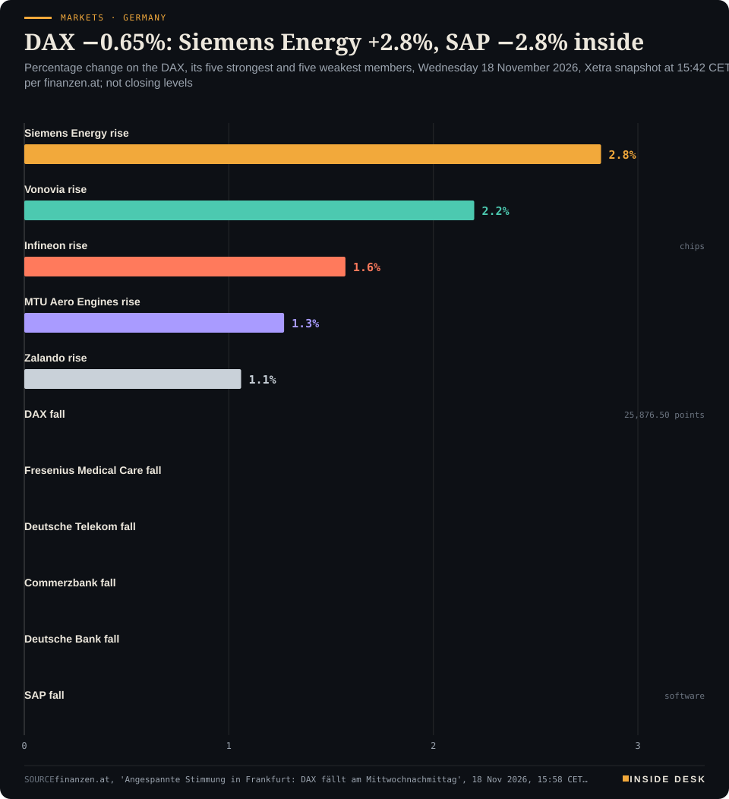
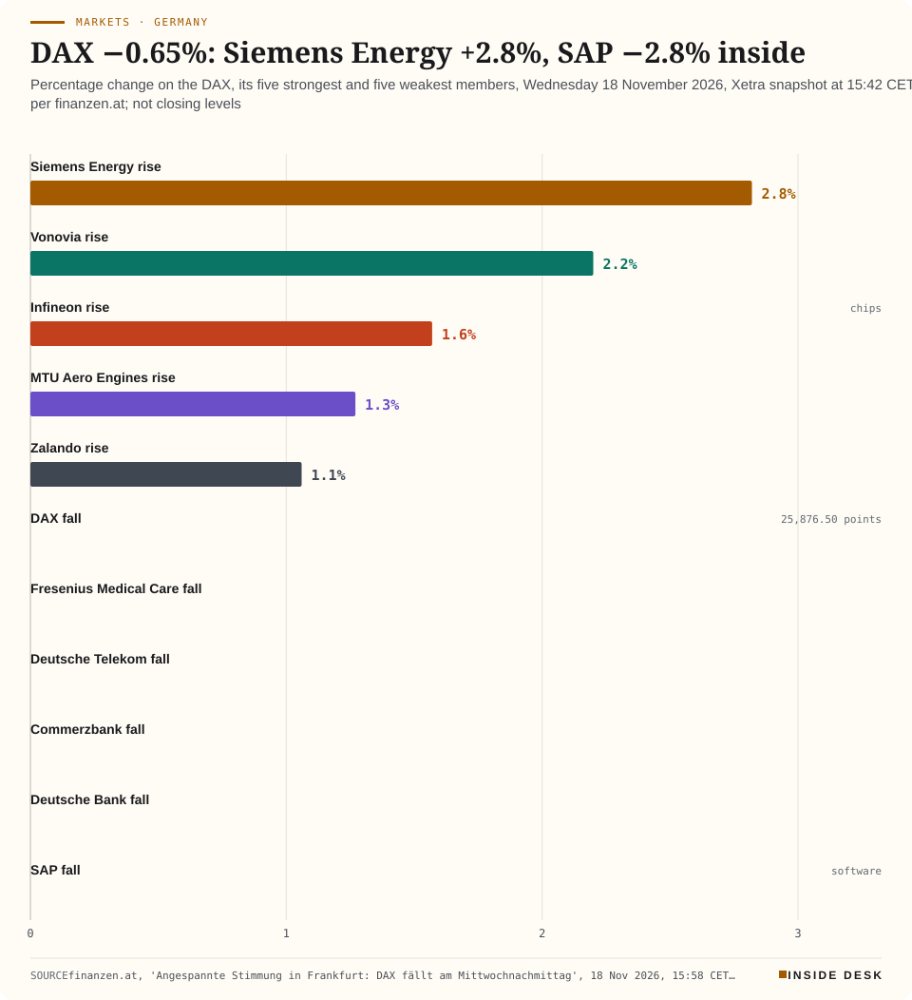
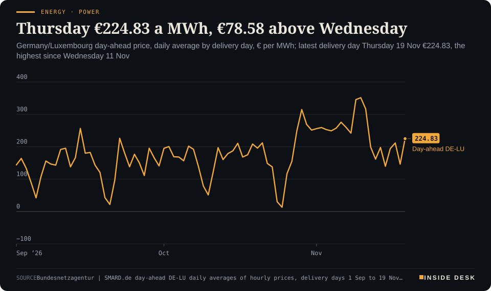
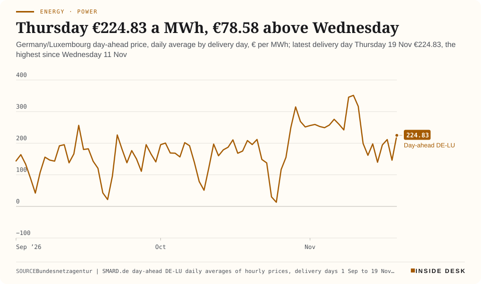

Inside Desk ePaper, Evening ePaper · Wed 18 Nov 2026
Wednesday, 18 November 2026Always free
Inside Desk
Evening ePaperPublished 17:30 CET · Berlin
Lead · Markets & Macro
Nvidia's quarter did what a good invoice does: it settled one argument. Wednesday's tape shows how many others were still open, from metal prices to inflation to a bank's old files.
Europe's shares slipped by mid-afternoon as miners fell and chipmakers rose on the first full day after Nvidia's numbers. Also: a coalition deal that cuts the electricity tax for one year, Thursday's power at €224.83 a MWh, a Hamm court on DAZN's price rise, Waymo off California's freeways and a €45 billion loan proposal for Kyiv.
Nvidia beat, Europe's miners sold off and Berlin bought one cheaper year of electricity; Wednesday was a day for reading the terms, not the headlines.
Geo-economics · p. 5
Energy & Industry · p. 9
Climate & Weather · p. 18
The day in one sentenceNvidia beat, Europe's miners sold off and Berlin bought one cheaper year of electricity; Wednesday was a day for reading the terms, not the headlines.
ContentsInside Desk · Evening ePaper18 November 2026
Europe's shares slipped by mid-afternoon as miners fell and chipmakers rose on the first full day after Nvidia's numbers. Also: a coalition deal that cuts the electricity tax for one year, Thursday's power at €224.83 a MWh, a Hamm court on DAZN's price rise, Waymo off California's freeways and a €45 billion loan proposal for Kyiv.
11 edition pieces · 11 desks · Published 17:30 CET, 18 November 2026
23 ePaper extras, added , 18 November. They appear only in the ePaper and carry their own time.
17:30 Evening ePaper, updated live until 22:30 with an “Updated” time and a Latest page
Sun 10:00 The Sunday Magazine
Berlin time. Every issue is free.
How to read it
Swipe, use the arrow keys or the page strip. Tap any headline for the reading view. Press / to search, t for contents, +/− to zoom. Download the PDF.
LatestInside Desk · Evening ePaper18 November 2026
Latest
Live: this page and the issue are updated until 22:30 Berlin time.
Markets: settled Wednesday closes, DAX -1.19%
LeadInside Desk · Evening ePaper18 November 2026
Markets & Macro · Lead · 3 min
Nvidia's quarter did what a good invoice does: it settled one argument. Wednesday's tape shows how many others were still open, from metal prices to inflation to a bank's old files.
At 15:42 CET the DAX stood 0.65% lower at 25,876.50 points, 168.87 below Tuesday’s close of 26,045.37 (Desk arithmetic)1. It had opened 0.14% higher at 26,082.63, touched 26,139.16, and then drifted down to a low of 25,858.791. On the week it is 3.35% lower so far1. These are snapshot figures, not the settled close; Xetra trading ends at 17:30.
That is the plain shape of the first full European session after Nvidia’s results: a small gain in the morning, given back by the afternoon. Last night’s invoice was good. It was simply not the only bill on the table.
Markets · GermanyDAX −0.65%: Siemens Energy +2.8%, SAP −2.8% insidePercentage change on the DAX, its five strongest and five weakest members, Wednesday 18 November 2026, Xetra snapshot at 15:42 CET per finanzen.at; not closing levels


Bar chart of Wednesday 18 November 2026 percentage changes in the DAX at 15:42 CET, per finanzen.at: Siemens Energy up 2.82 percent, Vonovia up 2.20, Infineon up 1.57, MTU Aero Engines up 1.27, Zalando up 1.06, the DAX down 0.65 at 25,876.50 points, Fresenius Medical Care down 1.74, Deutsche Telekom down 2.18, Commerzbank down 2.20, Deutsche Bank down 2.38 and SAP down 2.82 percent. These are intraday snapshot figures, not closes.
Source: finanzen.at, 'Angespannte Stimmung in Frankfurt: DAX fällt am Mittwochnachmittag', 18 Nov 2026, 15:58 CET (levels at 15:42 CET via Xetra); intraday snapshot, not closing levels; retrieved 18 Nov 2026 · reported figures · CSV
Read the chart in two halves. The top half is the Nvidia trade. Siemens Energy led the DAX, up 2.82%, with Infineon up 1.57%1. Earlier in the afternoon dpa-AFX counted Siemens Energy and Infineon among the tech-linked names that recovered, alongside Siltronic, Aixtron and Suss Microtec in the MDax; Siltronic gained more than 7% on a Berenberg buy recommendation2. Across the region, European tech stocks rose 1.3% and ASML 3.6%, Reuters reported shortly before 14:00 CET3. Nvidia’s own Frankfurt-listed shares were up about 4.68% around 14:40 CET4.
The bottom half is everything else. SAP fell 2.82% and Deutsche Bank 2.38%, the latter still the most traded DAX share by volume after Tuesday’s leaked-files reports1. Commerzbank lost 2.20% and Deutsche Telekom 2.18%1. The chip rally did not reach software, and it did not reach the banks.
The metal said something else. The day’s sharpest European move came from miners. By 09:08 CET Reuters had the sector down 3% at a near nine-month low, with copper prices unwinding on concerns about AI investment and a stronger dollar; Glencore fell 3.5% and Aurubis 2.9%5. Around 14:40 CET Anglo American was down about 4.76% and Rio Tinto about 3.14%4. There is an irony worth keeping: the same AI build-out that lifted the chip makers is the story copper is now pricing more cautiously.
The index level. Around 14:40 CET the Stoxx 600 was at about 648.68, down 0.31% from Tuesday’s 650.72, after Tuesday’s fall, its biggest one-day drop since 20 March4,5. The FTSE 100 was down about 0.54%, the CAC 40 about 0.30%, the Euro Stoxx 50 about 0.15%4.
The paper that did not move. Two inflation prints landed before lunch. Eurostat confirmed euro area inflation at 4.0% for October, up from 3.8%, with energy up 21.0% on the year and the index excluding energy, food, alcohol and tobacco at 2.6%7. In Britain the ONS reported CPI at 3.6%, up from 3.5%, with core CPI at 2.8%, little changed8. …
Geo-economicsInside Desk · Evening ePaper18 November 2026
Geo-economics · 2 min
Xi met Trump at the airport and Putin at dinner. The tariff American farmers want removed is still on the table, which is where tariffs are meant to be argued.
Donald Trump landed in Shenzhen at 09:45 CET on Wednesday, and Xi Jinping met him on the tarmac, returning the rare airport welcome Trump gave him in Washington in September, Nikkei Asia reports1. In the evening Xi and Peng Liyuan hosted APEC leaders at a banquet, where Trump and Vladimir Putin were seen shaking hands as Xi looked on, the eve of the trilateral meeting the White House has said will happen on Thursday1. Xi was also pictured shaking hands with Japan’s Sanae Takaichi, after more than a year of frosty ties1.
The speech asked for results. In his banquet welcome Xi called on leaders to work toward “concrete results” when they meet on Thursday morning, according to Xinhua as quoted by Nikkei1. Earlier, Putin told business leaders that “economic domination and coercion are now a thing of the past”, and Malaysia’s Anwar Ibrahim said: “You can’t say in one voice [that you’re] promoting trade and investment, but only to your country”1. Speeches are free. That is why this desk counts them last.
The line item. The American Soybean Association wants China’s remaining 10% retaliatory tariff on US soybeans removed; soybeans were left out of a September framework that lowered tariffs on $60 billion of goods2. “This retaliatory tariff puts U.S. soybeans at a distinct disadvantage compared to South American competitors,” ASA president Scott Metzger wrote to Treasury Secretary Scott Bessent and trade representative Jamieson Greer2. By the time of Nikkei’s last update, at 15:51 CET, no outcome on that tariff had been reported1.
Everyone else’s bilaterals. South Korea’s Lee Jae Myung met Xi; according to Seoul’s national security adviser, Xi said he was willing to support efforts to ease tensions on the Korean Peninsula, “including a North Korea-U.S. dialogue”1. Xinhua’s account made no mention of a possible Trump-Kim meeting1. …
Geo-economics · Short item · ePaper extra, added
The Commission's new anti-dumping duties hit five exporters. The more lasting change is a legal tool used for the first time.
The European Commission has imposed definitive anti-dumping duties on certain cold-rolled flat steel from five countries: 9.5% for India, 27.9% for Japan, 20.7% to 27% for Taiwan, 3% to 7.8% for Türkiye and 16% for Vietnam1. An investigation found the products were entering the EU at dumped prices, the Commission says1.
Cold-rolled flat steel goes into most areas of manufacturing. The EU market for it is worth some €23.2 billion, with domestic production in 12 member states employing more than 8,600 people1. Imports from the five countries named were €282 million from India, €240 million from Türkiye, €180 million from Japan, €345 million from Taiwan and €125 million from Vietnam1. Desk arithmetic: together about €1.17 billion, roughly 5% of the market’s value.
Geo-economics · Brief · ePaper extra, added
Canada and China agreed in Shenzhen on Tuesday to extend and expand a preliminary agreement on trade issues, opening more of the Chinese market to Canadian farmers and seafood harvesters and securing tariff relief for about C$400 million ($280 million) of exports, according to a statement from Mark Carney’s office reported by Nikkei Asia1. The statement says Canada “has recalibrated our relationship with China – strategically, pragmatically, and decisively”1.
On Wednesday Carney told APEC business leaders that Canada was taking “practical steps” with China on financial cooperation, including for times of stress1. In January Carney lowered Canada’s tariff wall on Chinese electric vehicles by setting up an import quota1.
C$400 million is small against a G7 economy’s trade. It is also exactly the size of thing that gets done: a list, a quota, a renewal date.
Markets & MacroInside Desk · Evening ePaper18 November 2026
Markets & Macro · Short item · ePaper extra, added
The chip makers rallied on Nvidia's quarter. The metal that wires the data centres fell, and took Europe's miners with it.
Copper futures on the London Metal Exchange fell as much as 3.6% on Wednesday to $12,765 a tonne, the lowest since April, extending what Investing.com described as the longest run of weekly losses in two years1. The pan-European mining index fell 2.3%; Poland’s KGHM lost around 4% and Boliden nearly 3%1.
The reasons given are worth reading in order. Reuters linked the slide to concerns about AI investment and a stronger dollar2. Investing.com added weaker Chinese economic data and noted that the copper sell-off intensified after the recent weakness in technology stocks reduced appetite for a metal used in pipes and wires1. Zinc fell 1.3%; nickel and aluminium each dropped more than 2%1.
In London the bill was visible by the afternoon: around 14:40 CET Anglo American was down about 4.76% and Rio Tinto about 3.14%3. Gold futures fell about 2% to around $3,786 an ounce, a level Trading Economics called the lowest in over a year, as expectations of Fed rate rises lifted the dollar3.
Here is the quiet contradiction of the day. A chip maker’s guidance is a promise about future data centres; copper is one of the things those centres are built from. On Wednesday the market believed the first and doubted the second. Neither is a verdict. Both are prices, and prices change their minds. Nothing here is investment advice.
Markets & Macro · Short item · ePaper extra, added
The settled closes are in. The 0.65% Wednesday you read at 17:30 ended near double that, and Europe's three-day bill is the largest since March.
The DAX closed down 1.19% at 25,736.24 points; the MDax lost 0.89% to 29,878.631. At 15:42 CET, when our Markets note was written, it stood at 25,876.50, so the last stretch of trading took another 140.26 points (Desk arithmetic). dpa-AFX notes the index broke below its 21-day line for the first time since the end of October1. The Stoxx 600 fell 6.67 points, or 1.03%, to 644.05: three losing days in a row, 3.03% in all, the largest three-day fall since 23 March, and the lowest close since 27 October2.
The chip trade held; little else did. Infineon closed 1.1% higher, Siemens Energy 1.3%, Aixtron 1.8% and Suss 2.6%3. SAP lost 3.8%, Deutsche Bank another 3.1% after Tuesday’s 6%, and Commerzbank 3.5%; traders cited falling bond yields weighing on banks, which in turn lifted Vonovia 2% and LEG 2.3%3. Deutz fell 16.6% after the short-seller report; the company says it is checking the claims3.
Traders pointed to US rate worries ahead of the Fed minutes and caution before Thursday’s Anthropic listing1,3. A strong quarter is a receipt, not a guarantee for the next bill. Not investment advice.
Markets & Macro · Brief · ePaper extra, added
Deutz shares fell at times by more than 17% to €7.56 on Wednesday, the biggest loser in the MDax, after the short seller Ningi Research published a critical report and said it was betting on a falling price1. Ningi alleges that Deutz did not disclose that 45% of FFG Industries, a growth unit of the roughly €1.6 billion Flensburger Fahrzeugbau Gesellschaft acquisition, belongs to a former Ukrainian member of parliament and his company1,2. These are a short seller’s allegations, not findings.
Deutz said it had taken note of the report, was examining its claims carefully and would respond “on the basis of the relevant facts”, in our translation1,2. In dpa-AFX’s 14:41 CET report the shares were still nearly 12% lower3.
A short report is a document with a position attached. The useful reply is another document: the acquisition paperwork, line by line. Nothing here is investment advice.
Politics & InstitutionsInside Desk · Evening ePaper18 November 2026
Politics & Institutions · 2 min
The overnight committee did agree the electricity-tax cut for everyone. It is paid for only for 2027, out of the green-power account, and the pension and bracket-creep files went back into the drawer.
The coalition committee of CDU, CSU and SPD agreed overnight to cut the electricity tax for all consumers to the European minimum of 0.1 cents per kilowatt-hour, from 2.05 cents today, according to the decision paper seen by ARD’s Berlin studio1. The cut costs about €5.4 billion a year1. Desk arithmetic: that is 1.95 cents off every kilowatt-hour.
The small print is the story. The money is secured only for 2027. The paper says the aim is “to continue the tax reduction beyond 31 December 2027”, but only if “sustainable counter-financing is guaranteed”1. The 2027 bill is to be paid from headroom in the EEG account, the fund behind renewable-power support, whose balance depends on the price of green electricity; if it falls short, the coalition promises a “package of measures” during the year1.
Chancellor Friedrich Merz called it a promise honoured: “we have kept our word”1. CDU general secretary Franziska Hoppermann was more candid about 2028: a coalition committee cannot close the gap in the 2028 federal budget “in one evening”1. The Greens’ Franziska Brantner called the lack of planning certainty a “poverty certificate”; ifo president Clemens Fuest called the cut “economically well justified”, then added that “any spending discipline is missing”1.
A fuel-price cap is to apply from 1 January, also limited to twelve months, with the regulation itself expiring after three months unless renewed; Länder may set higher or lower regional maximum prices1. On pensions and bracket creep there was apparently no deal. The parliamentary leaders told MPs by text that all other topics would be discussed “in the coming days”1.
For you, the useful thing is the dates rather than the speeches. The cut has to be written into a budget the committee has already passed, before the final vote on 27 November1. A tax that ends on a fixed date is a question that comes back on a fixed date.
Politics & Institutions · Short item · ePaper extra, added
The Commission wants to cover two-thirds of a €70 billion gap. The other third, and the vote of all 27, are still open.
The European Commission on Wednesday proposed a new €45 billion loan to Ukraine to help fill a funding gap of €70 billion for next year, Reuters reports1. Up to €25 billion could go on military aid and up to €20 billion on general budget support1. The Commission would borrow the money on international markets on behalf of the EU1.
The repayment clause is the unusual part. Ursula von der Leyen said Ukraine would only need to repay once Russia had paid reparations for the war’s damage1. The loan would come on top of the €90 billion that EU leaders agreed at the end of last year for 2026 and 20271.
Alongside the electricity-tax cut, the coalition committee decided that the cabinet should adopt a bill and a regulation on 2 December to “activate” a fuel-price cap from 1 January 2027, ARD reports1. The paper cites the “extraordinary crisis situation” around the Strait of Hormuz1. The legal basis is limited to twelve months, and the regulation lapses after three unless an extension is approved before then1. Länder are to be allowed to set higher or lower regional maximum prices, a change to Economy Minister Katherina Reiche’s draft that the SPD had called toothless1. The current fuel discount, in force since early October, ends in December1. A cap with a three-month fuse is a cap that must keep earning its renewal.
Psychology & BehaviourInside Desk · Evening ePaper18 November 2026
Psychology & Behaviour · 2 min
A study of two cohorts finds that depression or anxiety arriving on top of heart disease or diabetes goes with a much higher risk of death. Read it as a case for one clinic, not two.
Published on Wednesday in Nature Communications, a study by researchers at Peking University and colleagues followed 376,713 participants in the United Kingdom and 3,973 in the United States1. Cardiometabolic diseases, the authors note, cause over 30% of global deaths1. Their question: what does depression or anxiety add for people who already have one of them?
The first finding runs one way. Each additional cardiometabolic disease was associated with a 28.5% higher risk of depression or anxiety in the UK group and 33.4% in the US group1. The second runs the other way. Against people with neither cardiometabolic disease nor depression or anxiety, the hazard ratio for death from any cause in the UK participants rose from 1.200 to 2.389 among those with a single cardiometabolic disease once a mental disorder was identified during follow-up1. With two cardiometabolic diseases it rose from 1.754 to 2.9181. Desk arithmetic: for one disease, the ratio roughly doubles (2.389 is 1.99 times 1.200).
One result runs against intuition. Among people with cardiometabolic disease, the link between depression or anxiety and death was stronger in those with higher socioeconomic status1. The US replication showed “broadly similar patterns”1. The authors do not claim to have shown cause; their conclusion is about “prognostic value”1.
Now the annex, the part about what to do with it. An association in a cohort is not proof that treating anxiety would lengthen anyone’s life. But it is a strong argument against an old administrative habit: the heart clinic and the mental-health service with separate waiting lists, separate budgets and separate files. A questionnaire at the diabetes check-up costs minutes. A referral pathway that actually works costs a commissioner’s attention. Neither makes headlines.
If you live with one of these conditions, the takeaway is modest and practical. Low mood or constant worry after a diagnosis is worth raising with the same doctor who measures your blood pressure. It belongs in the same file.
Psychology & Behaviour · Short item · ePaper extra, added
An international trial in depression put training before cognitive behavioural therapy. The memory gains showed up in the therapy phase. Small, plausible, worth a larger test.
A randomised trial published in Mental Health and Physical Activity tested whether exercise can prepare people with mild to moderate depression for cognitive behavioural therapy, Medical Xpress reports1. Participants trained for 12 weeks, then had 12 weeks of CBT1.
The trial began with 120 adults with depressive disorder; 74 completed every phase1. Desk arithmetic: about 62% stayed the course. …
Researchers at UT Southwestern and UT Dallas gave 29 women with mild to moderate major depression a week each of 500 mg or 800 mg of pregnenolone a day, or placebo, in a double-blind crossover trial published in the Journal of Clinical Psychiatry1. Only 11 had usable brain scans from all three conditions1.
At 500 mg, connectivity between the amygdala and the left frontal pole fell compared with placebo; at 800 mg it did not1. Both doses raised blood levels of allopregnanolone and were well tolerated1. The next step, the team says, is to see whether the change tracks any improvement in symptoms1.
Eleven scans are a reason to run a bigger study, not to buy a supplement. The authors say exactly that, which is to their credit.
Energy & IndustryInside Desk · Evening ePaper18 November 2026
Energy & Industry · 2 min
Thursday's power clears more than half above Wednesday's. The cheap night that made Wednesday a bargain does not come back.
Thursday’s day-ahead auction has cleared, and SMARD lists the price for delivery on 19 November at €224.83 per megawatt hour on average for Germany and Luxembourg1. Desk arithmetic: that is €78.58, or about 54%, above Wednesday’s €146.25, and the highest daily average since Wednesday 11 November, when it was €316.651.
Energy · PowerThursday €224.83 a MWh, €78.58 above WednesdayGermany/Luxembourg day-ahead price, daily average by delivery day, € per MWh; latest delivery day Thursday 19 Nov €224.83, the highest since Wednesday 11 Nov


Line chart of the daily average German-Luxembourg day-ahead electricity price from 1 September to 19 November 2026, in euros per megawatt hour. After a record €351.48 on Tuesday 10 November the price fell to €139.70 on Sunday 15 November, rose to €211.58 on Tuesday 17 November, dropped to €146.25 on Wednesday 18 November and climbs to €224.83 for delivery on Thursday 19 November, €78.58 above Wednesday and the highest daily average since Wednesday 11 November (€316.65).
Source: Bundesnetzagentur | SMARD.de day-ahead DE-LU daily averages of hourly prices, delivery days 1 Sep to 19 Nov 2026 (latest available: Thursday 19 Nov €224.83), retrieved 18 Nov 2026, 16:30 CET · CC BY 4.0 · CSV
The floor moved, not just the peak. Last night this desk pointed out that Wednesday’s discount sat almost entirely between midnight and lunch. Thursday takes that discount away. …
Energy & Industry · Short item · ePaper extra, added
The cabinet's gas-reserve bill puts a small levy on heating from October 2027. The larger fight is over who pays, and the paperwork has a useful side effect for you.
Households that heat with gas are to help pay for a national gas reserve from October 2027, Futurezone reports from the cabinet’s draft law, adopted on 11 November and before the Bundesrat since 12 November as an urgent bill1. The reserve is to hold 24 terawatt hours, about a tenth of German storage capacity, and may only be released once the Federal Network Agency declares the emergency stage1.
The running costs are now put at €247 million to €405 million a year, up from an upper bound of €308 million in October’s draft1. On the government’s worked examples, a flat using 13,000 kWh would pay €3.77 to €6.11 a year and a detached house using 20,000 kWh €5.80 to €9.401. Roughly 40% falls on households and small business and 60% on industry1.
That split is the quarrel. The industrial energy association VIK backs the reserve but rejects the levy: “Krisenvorsorge ist jedoch eine staatliche Aufgabe,” says chief executive Christian Seyfert, crisis provision is a job for the state budget1. The utilities’ association BDEW and the municipal utilities’ VKU also prefer the budget1.
The dull detail worth knowing: a supplier that passes the levy on must write to you at least a month ahead, and that letter gives you the right to cancel without notice on the day the price rises, under § 41 of the Energy Industry Act1. Desk arithmetic: at the upper bound the new levy is about a sixth of the old storage levy of €2.89 per MWh that was abolished on 1 January1.
Energy & IndustryInside Desk · Evening ePaper18 November 2026
Energy & Industry · Brief · ePaper extra, added
The “Energos Force”, a 294-metre regasification ship, went into service at Stade on the Elbe on Monday, NDR reports1. “Über das Terminal in Stade können 2027 voraussichtlich bis zu 3,2 Milliarden Kubikmeter Erdgas in das deutsche Gasnetz eingespeist werden,” said economy minister Katherina Reiche: up to 3.2 billion cubic metres next year1. It is the fourth terminal run by the state-owned Deutsche Energy Terminal, after two in Wilhelmshaven and one in Brunsbüttel; each cargo carries enough gas for 70,000 households for a year, DET’s Peter Röttgen said1.
The project was meant to start in 2024 and slipped because of work on the site; a larger onshore terminal is due to replace the ship in 20291. The environmental group DUH warned against swapping one dependency for another, as most recent German LNG came from the United States1. Infrastructure is not glamorous. It is the part of security you can tie a ship to.
Money, FX & CommitteesInside Desk · Evening ePaper18 November 2026
Money, FX & Committees · Podium vs Print · 2 min
The Treasury answered Britain's 3.6% inflation with a £100 payment. The same morning's papers priced diesel at a record and January's energy bill £443 higher.
Podium
“The household energy payment, announced in our budget, is providing £100 directly into 20 million bank accounts in January, which will help to give families breathing space now.”
Emma Reynolds, Chief Secretary to the Treasury, Wednesday 18 November 2026, after the 08:00 CET inflation release
Print199.5p
Diesel rose by 7p a litre to 199.5p a litre, the highest price on records dating back to 1996, as CPI inflation rose to 3.6%.
Office for National Statistics, October 2026 consumer prices, as reported by the Guardian, Wednesday 18 November 2026, 08:00 CET
The podium. Britain’s inflation rate rose to 3.6% in October, from 3.5%, the ONS said on Wednesday morning2. The Treasury’s answer came from Emma Reynolds, chief secretary: the conflict in the Middle East and Russia’s invasion of Ukraine “have pushed up costs around the world”, and the household energy payment “is providing £100 directly into 20 million bank accounts in January, which will help to give families breathing space now”1. The Bank of England added its own line: inflation “is expected to rise further by the middle of next year due to cost pressures already in the pipeline”4.
The print. The same release, as the Guardian read it, put the average price of diesel up 7p a litre to 199.5p, the highest on records going back to 1996, and petrol up 5.2p to 174.7p, a four-year high1. Motor fuels rose at an annual rate of 33.2%1. Transport, particularly fuel, made the largest upward contribution to the monthly change in the CPI2. On the same morning Cornwall Insight’s final forecast put January’s price cap for a typical household at £2,166 a year, up 26%, or £443 on the current cap3. Cornwall says the £100 payment is a one-off outside the cap and therefore not in its forecast3.
The gap. Desk arithmetic: £100 is about 23% of Cornwall’s forecast £443 annual increase. The payment is real money and arrives on a date. The price cap is a rate that runs every day the heating is on. Neither number is wrong; they are simply different kinds of number, and only one of them repeats. Not everything is pressure: food inflation slowed to 0.9%, the lowest since September 2021, and core CPI held at 2.8%1,2.
For you. If you pay a British energy bill, read the unit rate and the standing charge, not the headline payment. Cornwall’s forecast is 32.54p per kWh of electricity and 10.90p for gas, before Ofgem sets the real figure3. Nothing here is investment advice.
Money, FX & Committees · Short item · ePaper extra, added
Eurostat confirmed 4.0% for the euro area. The average hides a 2.7-point gap between the bloc's largest economy and its third.
Eurostat confirmed on Wednesday that euro area annual inflation was 4.0% in October, up from 3.8% in September and 2.1% a year earlier, matching its flash estimate of 4 November1. Energy prices were 21.0% higher than a year ago, revised up from 20.8% in the flash, and contributed 1.89 percentage points of the 4.0; services added 1.55 points1.
The average is a poor guide to any single kitchen. Italy’s annual rate jumped to 5.6% from 4.2%, with prices up 1.2% in a single month1. Germany went the other way: 2.9%, down from 3.3%, with prices 0.1% lower on the month1. Desk arithmetic: the gap between the two is 2.7 percentage points under the same central bank rate. Belgium was at 5.2%, Greece 5.7%, Spain 4.9% and France 3.7%1.
Underneath, the measure excluding energy, food, alcohol and tobacco rose to 2.6% from 2.5%1. Processed food, alcohol and tobacco were up only 0.4% on the year1. So the story is still mostly the energy bill, and how fast each country’s tariffs pass it on.
For you, the practical point is that “euro area inflation” is a statistic about 21 countries, not a description of your shopping. If your rent, pay or pension is indexed, check which national index it uses. The next flash estimate, for November, is scheduled for 1 December1. Nothing here is investment advice.
Money, FX & CommitteesInside Desk · Evening ePaper18 November 2026
Money, FX & Committees · Brief · ePaper extra, added
A day after reports built on more than 15 million internal documents, Deutsche Bank’s chief executive Christian Sewing told Handelsblatt: “Ich bin nicht fehlerfrei” — “I am not without fault”, in our translation1. He rejected the charge that he had pushed risks aside and said client data such as account numbers, balances and login details were, on the bank’s findings, not affected1. The bank, he said, has put €7 billion into compliance and anti-money-laundering work and raised staff there by 40% to 3,0001.
The more useful news is procedural. Hesse’s data protection commissioner, Alexander Roßnagel, said he had opened an investigation into whether the bank informed affected customers without undue delay, as data protection law requires1. The bank had formally notified his office; whether it did so in time is now being checked1.
At 15:42 CET Deutsche Bank shares were 2.38% lower at €30.212. An apology is a statement. A regulator’s file is a process, and processes are what customers can rely on.
Ordinary & Inherited LifeInside Desk · Evening ePaper18 November 2026
Ordinary & Inherited Life · 2 min
For the first time a German court has ordered a company, in a consumer class action, to pay the affected customers directly. Almost 8,800 people signed up.
The Higher Regional Court in Hamm ruled on Wednesday that the streaming service DAZN’s one-sided price rises in running contracts in 2021 and 2022 were invalid, the Federation of German Consumer Organisations (vzbv) reports1. Almost 8,800 people joined the class action1. The ruling (I-12 VKl 1/24) is not yet final1.
The ledger lines are plain. In August 2021 DAZN raised the monthly price from €11.99 to €14.99 and the annual subscription from €119.99 to €149.991. In August 2022 the monthly price nearly doubled, from €14.99 to €29.99, and annual subscriptions rose to as much as €299.991. Desk arithmetic: a monthly subscriber on the original price was paying €18 more a month by late 2022, two and a half times the starting fee.
Those who registered by 25 September 2026 can get back the difference between the agreed and the raised price, depending on how long they paid it, plus interest awarded by the court1. New contracts were not part of the case, and registration is closed1.
What makes it a first is the form. Under this kind of action, an “Abhilfeklage”, customers receive the payment directly instead of having to sue again individually, the vzbv says1. “A state under the rule of law must ensure that people who do not hire law firms themselves also get their rights,” said vzbv board member Ramona Pop1.
The money is not on its way yet. The court has asked the parties for a written settlement proposal; without one, payment waits until the ruling is final, and either side can still go to the Federal Court of Justice1. If you were a long-standing subscriber, the useful thing is to keep your old bank statements. Courts move slowly; receipts keep.
Ordinary & Inherited Life · Short item · ePaper extra, added
UK inflation hit a one-year high in October on fuel and tobacco. The supermarket aisle was the quiet exception.
British consumer prices rose 3.6% in the year to October, up from 3.5% and the highest in a year, official figures showed on Wednesday morning, Reuters reports1. Higher fuel prices and an earlier-than-usual rise in tobacco taxes did most of the pushing, the Office for National Statistics said1.
The aisle told a different story. Food and non-alcoholic drink prices were up just 0.9% on a year earlier, the smallest increase since September 20211. Deutsche Bank’s Sanjay Raja credited “fierce supermarket competition”, while adding it was unclear how much longer that could hold prices off1. Core inflation held at 2.8% and services at 3.7%, where economists had expected services to rise1.
The bill that does not yet show is energy. …
Ordinary & Inherited Life · Brief · ePaper extra, added
About 45.67 million people worked in Germany in the third quarter, Destatis said on Wednesday, 57,000 or 0.1% fewer than in the second quarter after seasonal adjustment1. The office says employment had also fallen by 0.1% quarter on quarter since the second quarter of 20251. Year on year the count was down 222,000, or 0.5%1. The split matters more than the total: public services, education and health added 172,000 people (+1.4%), while manufacturing excluding construction shed 164,000 (-2.1%) and trade, transport and hospitality 113,000 (-1.1%)1. A payroll that shrinks by a tenth of a percent a quarter makes no headlines. A string of them is the headline.
Tech & ComputeInside Desk · Evening ePaper18 November 2026
Tech & Compute · 2 min
California's motor-vehicle regulator barred Waymo's robotaxis from the state's freeways after repeated drives into construction zones. The company pulled freeway rides everywhere. The dull paperwork of a permit did more than any keynote.
California’s Department of Motor Vehicles has barred Waymo’s robotaxis from the state’s freeways, TechCrunch reports1. The order was issued on 11 November but only became public on Tuesday1. Desk arithmetic: six days passed between the order and the public hearing about it. The DMV told TechCrunch it acted after three Waymo vehicles drove into an active construction closure on U.S. Route 101 near Burlingame, and after a separate incident involving California Highway Patrol vehicles on Highway 280 in San Francisco1.
The regulator’s wording is unusually blunt. It found that Waymo’s driverless freeway operations “pose an imminent hazard to public safety” because of “recurring incursions” into active construction zones, “despite a prior restriction and corrective actions” that followed similar incidents on 18 May 20261. The restriction stays until Waymo can show “effective corrective actions”1.
Waymo went further than it was told. It has stopped its robotaxis using freeways in every market it serves, including those outside California; it runs commercial service in 15 US cities1. A spokesperson said the encounters on the 101 “did not involve any injuries or collisions”, and that the service keeps running on surface streets, “serving over half a million trips each week”1. Freeway rides only began in late 2025, paused abruptly in May and came back in July after a software update aimed at construction zones1.
Read it as a working system, not a scandal. A permit holder made the same kind of mistake twice, the licensing office used the power it has, and the company complied, then widened the pause beyond the state. No one was hurt. That is how dull institutions are meant to work: a written condition, a record of incidents and a lever that can be pulled without a court case. A road crew’s cones are not glamorous data, but they are the test that matters.
Tech & Compute · Short item · ePaper extra, added
A flaw in Java's Base64 decoder can let an attacker run code without logging in. CISA says patch now. The hard part is the inventory.
The US Cybersecurity and Infrastructure Security Agency has told organisations to patch CVE-2026-114938, nicknamed “Java4Shell”, straight away1. It is a memory-corruption flaw in the Base64 decoder of the x86-64 HotSpot Java virtual machine; specially crafted input can crash the JVM and allow unauthenticated remote code execution1.
The researchers at Calif, who found it, say the corruption can be triggered by “just 64 A characters followed by a single =” and rate it 9.2 out of 102. …
Tech & Compute · Brief · ePaper extra, added
Google will keep temporary Gemini chats, and chats made with history turned off, for around two months rather than the 72 hours its privacy hub previously stated, TechCrunch reports1. The change rolls out globally over the coming weeks1. Google cites safety, security, feedback and possible system failures, and says temporary chats are not used to train its models1. For comparison, OpenAI says it may keep ChatGPT temporary chats for up to 30 days, and Anthropic keeps Claude’s incognito chats for 30 days by default1.
There is a gain too: chat history and AI training now have separate switches, where one “Keep Activity” setting used to govern both1. If you had turned that setting off, both new switches start off1. “Temporary” is a retention policy, not a promise. Check the settings page, not the label.
Health & CareInside Desk · Evening ePaper18 November 2026
Health & Care · 2 min
Lembaz, given into the spinal canal every two weeks, is the first treatment shown to help children with infantile-onset Niemann-Pick disease type C live longer. The evidence is small and the comparison external. For a disease this rare, that is how the ledger is kept.
The US Food and Drug Administration on Tuesday approved Lembaz (adrabetadex), the first treatment shown to help people with the severe, infantile-onset form of Niemann-Pick disease type C live longer1. It is approved to reduce the risk of death in adults and children weighing at least 7 kg whose neurological symptoms began before the age of six1.
NPC is an inherited lysosomal storage disorder affecting an estimated 1 in 150,000 people: cells cannot process cholesterol and other fats properly, which build up, particularly in the brain, and take away movement, coordination and the ability to swallow1. Two therapies were already approved, the FDA notes, but neither had been shown to reduce the risk of death, and both carry age and weight limits that exclude the youngest patients1.
The evidence is the survival of 36 treated patients across three clinical studies and an expanded-access programme, compared with a matched external control group1. Treated patients had a 55% lower risk of death; median survival was 8.5 years against 4.91. Desk arithmetic: a gap of 3.6 years in median survival. The benefit was seen whether or not patients also took miglustat, which is used off-label1.
The price is paid in procedure and side effects. A trained clinician injects the drug into the spinal canal every two weeks1. The label carries a boxed warning for hearing impairment, including permanent loss, and requires a full hearing evaluation before treatment and regularly during it1.
Be sceptical of the design, not of the decision. Thirty-six patients and a historical comparison would not carry a drug for a common illness. For a disease of one in 150,000, that is the record there is, and the regulator has said plainly how it was built. What matters now is the dull part: audiology appointments booked, every fortnight’s injection logged, and the survival curve kept up to date after approval.
Health & Care · Short item · ePaper extra, added
The FDA has approved Novartis's Cosentyx for polymyalgia rheumatica when steroids fail or cannot be tapered. It is a common illness of the over-50s, and the trial doubled sustained remission.
The US Food and Drug Administration has approved secukinumab (Cosentyx) 150 mg for adults with polymyalgia rheumatica who have responded inadequately to corticosteroids or cannot tolerate tapering them, Novartis said on Tuesday1. The indication is already approved in the EU1.
PMR causes acute pain and stiffness in the shoulders, neck and hips, mainly in people over 50; Novartis puts the number living with it in the US at about 966,0001. Steroids are the standard treatment, but up to 40% of patients relapse in the first year, and long-term use raises the risk of osteoporosis, cardiovascular disease and diabetes1.
In the Phase III REPLENISH trial across 27 countries, every arm was given a 24-week steroid taper1. At week 52, 40.5% of patients on Cosentyx 150 mg were in sustained remission against 20.5% on placebo1. Desk arithmetic: 20 percentage points. Serious adverse events ran at 15.9% against 14.2%; hypersensitivity reactions (14% v 9%) and urinary tract infections (13% v 7%) were more common on the drug, and one patient died of cryptococcal meningitis1.
These are the company’s figures from a published trial, with the costs listed alongside the benefits. “Getting out of bed, getting dressed, lifting your arms,” as one patient advocate put it, are what the endpoint measures1. If a parent or neighbour is in their third year of steroids, this is a question for the rheumatologist, not a headline.
Health & CareInside Desk · Evening ePaper18 November 2026
Health & Care · Brief · ePaper extra, added
On 17 November the FDA granted accelerated approval to neladalkib (Nelkarmi, Nuvalent) for adults with advanced ALK-positive non-small cell lung cancer who have already had alectinib, or two or more ALK inhibitors plus platinum chemotherapy1. It is a 150 mg tablet taken once a day1.
The single-arm ALKOVE-1 trial measured tumour response1. After alectinib alone (67 patients), 49% responded; after two or more inhibitors and chemotherapy (155 patients), 32% did1. About half of the responders in each group were still responding at 12 months1. Warnings cover the liver, kidneys and eyes, among others1.
Response rates from an open-label trial with no comparison arm are a promissory note, not a receipt. The receipt is how long patients live, and this page does not report it yet. The word “accelerated” on the label says as much.
Security & OrderInside Desk · Evening ePaper18 November 2026
Security & Order · 2 min
Washington says strikes far inside Russia have not shortened the war. Berlin and London say they save lives. The quarrel happened in the room where the ammunition is pledged.
At Nato headquarters on Tuesday, where Ukraine’s backers met to gather more arms and ammunition, the Pentagon’s policy chief Elbridge Colby said Kyiv’s strikes deep inside Russia “have not been effective in driving an end to the war, nor do they contribute to blunting Russia’s advances on the front line”, the Guardian reports1. Strikes on civilian targets such as the retailer Wildberries had, he said, “probably hardened” Russian resolve1. He added that this did not mean Ukraine should fight “with its hands tied behind its back”, and that Washington would focus its support on the front lines and “associated midrange strikes”1.
The answer from Berlin came quickly. Asked whether he agreed, Defence Minister Boris Pistorius said criticising strikes on “strategic military and military-used targets” in Russia was “quite a stupid thing”1. Better, he said, to talk about the “terroristic strikes every night and every day” on Ukraine’s energy, water and heating1. Britain’s defence minister, Wes Streeting, said the strikes “helped to degrade Putin’s war machine, buying time and saving lives”1.
The same night, Volodymyr Zelenskyy called the strike on the Kerch Bridge revenge for Russian attacks on Ukrainian bridges, railways and grain ships1. Oleksandr Danyliuk, president of the Dutch-headquartered start-up Destinus, told Reuters that seven of its Ruta cruise missiles hit the bridge, the only foreign-made weapons used in that operation, according to the company1.
There is a temptation to read a public disagreement as a crack. The more sober reading is that the argument is now about which targets, not whether to help. That is an argument about procurement lists and range limits, the dull material that decides wars more often than speeches do. You should watch the delivery schedules, not the adjectives.
Security & Order · Short item · ePaper extra, added
October was the best hiring month of the year, the ministry says. Pistorius reads the numbers as a reason not to reach for conscription.
The Bundeswehr had about 190,600 active soldiers at the end of October, the defence ministry said, about 6,400 or 3.5% more than in October 20251. That already exceeds the legally set growth corridor for 2026 of 186,000 to 190,0001. October was the strongest hiring month of the year1.
The pipeline behind the headline is wider. Applications reached about 64,500 by the end of October, up 31%, and hires across all military careers 27,400, up 20%1. Some 14,200 people are serving as voluntary conscripts or short-term soldiers under the new military service, about 17.5% more than a year earlier1. More than 75,000 reservists hold a posting, inside the 70,000 to 80,000 target band1. …
Security & Order · Brief · ePaper extra, added
Moldova restricted its airspace at 16:27 local time on Tuesday after a Shahed-type drone was reported flying from the south towards Chisinau’s Botanica district, the state agency Moldpres reports1. Seven drones crossed the country’s airspace that day, and Russia’s ambassador-designate was summoned to the foreign ministry1. President Maia Sandu said “Russia cares neither about neutrality, sovereignty, nor human life”, and admitted: “We still do not have the defense capabilities necessary to protect ourselves”1. Drones have rarely come close to the capital before, the Guardian notes2. Sandu pledged to press for more sanctions1. A small state that says plainly what it cannot yet do is halfway to getting it done.
Climate & WeatherInside Desk · Evening ePaper18 November 2026
Climate & Weather · 2 min
India's third cyclone on the Andhra coast in under a month arrives as the rice stands ready. The useful work is being done in fields and fishing harbours, not in headlines.
Cyclone Akvan is expected to cross the coast of north Andhra Pradesh and south Odisha by noon local time on Friday 20 November, the India Meteorological Department said on Wednesday, with winds of 90 to 100 km per hour1. It has been moving slowly, at around 8 km per hour, and is expected to gain speed from Thursday1. “On November 19, heavy to very heavy rainfall will occur in the coastal parts of Odisha and Andhra,” said IMD director general Mrutyunjay Mohapatra1.
The track has moved, and so has the number. On Tuesday the IMD’s warning pointed further south, to a crossing between Nellore and Tuni as a very severe cyclonic storm with sustained winds of 120 to 130 km per hour2. By Wednesday the expected landfall lay between Narsapur in Andhra and Puri in Odisha1. Forecasts are revised; that is what they are for. The preparations do not depend on the last decimal.
The calendar is the problem. Akvan is the third cyclone to hit the state in less than a month, after Arnab and Murasu in late October and early November, and the kharif crop is nearing harvest in several districts2. As of 14 November, crops stood on 23.87 lakh hectares in Andhra Pradesh, 21.32 lakh of them kharif and 13.60 lakh paddy; officials singled out 9.51 lakh hectares in ten coastal districts, 9.16 lakh of them paddy3. Desk arithmetic: a lakh is 100,000, so the coastal priority area is about 951,000 hectares, or roughly 9,510 square kilometres of crops.
The dull machinery. The agriculture minister told officials to help farmers harvest paddy, maize and cotton that is ready, move produce to safety, clear field channels against waterlogging, and hold off fertiliser and pesticide during heavy rain3. Of 30,808 fishing boats in the state, 30,635 were back ashore by Monday morning, with 173 still being called in3. On Wednesday Andhra kept 13 national and 11 state disaster-response teams ready, and Odisha said even residents of two-storey buildings near the coast might have to move because of storm-surge warnings1.
For you. Nothing on your plate changes this week. …
Climate & Weather · Short item · ePaper extra, added
Arabica rose 2.36% on Tuesday while robusta fell to a two-and-a-half-year low. Two harvests, two weather stories, one word on the supermarket shelf.
Coffee is two markets, and on Tuesday they went in opposite directions. March arabica on ICE in New York settled at 281.40 US cents a pound, up 6.50 cents or 2.36%, CocoaIntel reports1. January robusta in London settled at $3,071 a tonne, down $73 or 2.32%, its lowest in roughly two and a half years1.
The reason is in the harvest calendar. …
Climate & Weather · Brief · ePaper extra, added
West Africa is getting drier, which is normal for mid-November, but the pace of the dry-down will help decide how much cocoa the second half of the main crop yields, ADM Investor Services wrote on Monday1. Ivory Coast’s production is lagging last year’s even though the harvest began a month earlier than usual1.
World Weather Inc. reported only sporadic, light rain over the weekend and expected the same over the following seven to ten days; what rain there is falls mainly near the coast, and the growing areas are seeing net drying1. Meanwhile, cocoa stocks held by the exchanges continue to climb1.
Both facts are true at once: less fruit on the trees, more beans in the warehouses. Read the two together and resist the louder one: a dry week is a reason to watch the arrivals figures, not yet a verdict on the crop.
Charts and dataInside Desk · Evening ePaper18 November 2026
Charts and data
Energy · PowerThursday €224.83 a MWh, €78.58 above WednesdayGermany/Luxembourg day-ahead price, daily average by delivery day, € per MWh; latest delivery day Thursday 19 Nov €224.83, the highest since Wednesday 11 Nov
Line chart of the daily average German-Luxembourg day-ahead electricity price from 1 September to 19 November 2026, in euros per megawatt hour. After a record €351.48 on Tuesday 10 November the price fell to €139.70 on Sunday 15 November, rose to €211.58 on Tuesday 17 November, dropped to €146.25 on Wednesday 18 November and climbs to €224.83 for delivery on Thursday 19 November, €78.58 above Wednesday and the highest daily average since Wednesday 11 November (€316.65).
Source: Bundesnetzagentur | SMARD.de day-ahead DE-LU daily averages of hourly prices, delivery days 1 Sep to 19 Nov 2026 (latest available: Thursday 19 Nov €224.83), retrieved 18 Nov 2026, 16:30 CET · CC BY 4.0 · CSV
Latest values
Series
Value
Date
Chart
Day-ahead DE-LU
224.83
19 Nov 2026
Thursday €224.83 a MWh, €78.58 above Wednesday
Last data point of each series in the charts above, from the Inside Desk data archive. Sources under each chart.
Back pageInside Desk · Evening ePaper18 November 2026
Before you close the tab
The day in one sentence
Nvidia beat, Europe's miners sold off and Berlin bought one cheaper year of electricity; Wednesday was a day for reading the terms, not the headlines.
One thing you can do this week
Before the cold arrives, write down three numbers on one sheet of paper: the gas or electricity meter, the water meter, and, if you have one, the level on the oil tank. Put the date next to them and pin the sheet somewhere dull, inside a cupboard door will do. Do it again in four weeks. You will not need an app to see what the winter costs you; the paper will have done the counting.
A habit, not advice.
What went right
Antarctic blue whales, the largest animals known to have lived, have grown from about 418 animals in 1973 to an estimated 4,018, an average of 4.5% a year 1. The International Whaling Commission banned killing them in 1964, but illegal whaling went on until 1973 1. The estimate comes from a study led by Zoe Rand at the University of Washington, which combined historical catch records, photo identification and decades of line transect surveys across the Southern Ocean 1. The species is still listed as critically endangered and remains a fraction of its pre-whaling numbers 1. A ban, a logbook and fifty years of counting: recovery is mostly patience with paperwork.
In euros at home
Heating oil kept slipping on Wednesday. Tecson put the litre at €1.65 on 18 November, down from €1.70 on each of the previous four days, and esyoil at €1.60, down from €1.63 on Tuesday 2. A year earlier, in mid-November 2025, esyoil's average was €0.95 2. Desk arithmetic: 3,000 litres, a typical order for a detached house, cost about €4,950 at Tecson's €1.65, some €150 less than at €1.70; at esyoil's €1.60 it is about €4,800. At last November's €0.95 the same order would have been about €2,850. An esyoil commentator quoted by the Morgenpost said an end to the high price level is "not in sight" 2.
Prices per litre as listed by Berliner Morgenpost from Tecson and esyoil, 18 Nov 2026, 10:25 CET; they depend on quantity, region and supplier. Nothing here is advice.
Small words
Line transect survey
A way of counting animals you cannot all see at once. A ship sails along straight, pre-planned lines and the crew records every animal spotted and how far from the line it was. Because fewer animals are seen the further away they are, statisticians use those distances to estimate how many were missed, and from that the population across the whole area. It is how the Southern Ocean's blue whales were counted.
Commentary for information only. Not investment, legal, tax, medical or political advice. Inside Desk is free and reader-supported. Every number is sourced in the piece it appears in.
This issue has been updated.
All articles in this edition
Markets & Macro · 3 min read
Minus 0.65% after a beat: Europe buys the chips and sells the copper
Nvidia's quarter did what a good invoice does: it settled one argument. Wednesday's tape shows how many others were still open, from metal prices to inflation to a bank's old files.
At 15:42 CET the DAX stood 0.65% lower at 25,876.50 points, 168.87 below Tuesday’s close of 26,045.37 (Desk arithmetic)1. It had opened 0.14% higher at 26,082.63, touched 26,139.16, and then drifted down to a low of 25,858.791. On the week it is 3.35% lower so far1. These are snapshot figures, not the settled close; Xetra trading ends at 17:30.
That is the plain shape of the first full European session after Nvidia’s results: a small gain in the morning, given back by the afternoon. Last night’s invoice was good. It was simply not the only bill on the table.
Markets · GermanyDAX −0.65%: Siemens Energy +2.8%, SAP −2.8% insidePercentage change on the DAX, its five strongest and five weakest members, Wednesday 18 November 2026, Xetra snapshot at 15:42 CET per finanzen.at; not closing levels
Bar chart of Wednesday 18 November 2026 percentage changes in the DAX at 15:42 CET, per finanzen.at: Siemens Energy up 2.82 percent, Vonovia up 2.20, Infineon up 1.57, MTU Aero Engines up 1.27, Zalando up 1.06, the DAX down 0.65 at 25,876.50 points, Fresenius Medical Care down 1.74, Deutsche Telekom down 2.18, Commerzbank down 2.20, Deutsche Bank down 2.38 and SAP down 2.82 percent. These are intraday snapshot figures, not closes.
Source: finanzen.at, 'Angespannte Stimmung in Frankfurt: DAX fällt am Mittwochnachmittag', 18 Nov 2026, 15:58 CET (levels at 15:42 CET via Xetra); intraday snapshot, not closing levels; retrieved 18 Nov 2026 · reported figures · CSV
Read the chart in two halves. The top half is the Nvidia trade. Siemens Energy led the DAX, up 2.82%, with Infineon up 1.57%1. Earlier in the afternoon dpa-AFX counted Siemens Energy and Infineon among the tech-linked names that recovered, alongside Siltronic, Aixtron and Suss Microtec in the MDax; Siltronic gained more than 7% on a Berenberg buy recommendation2. Across the region, European tech stocks rose 1.3% and ASML 3.6%, Reuters reported shortly before 14:00 CET3. Nvidia’s own Frankfurt-listed shares were up about 4.68% around 14:40 CET4.
The bottom half is everything else. SAP fell 2.82% and Deutsche Bank 2.38%, the latter still the most traded DAX share by volume after Tuesday’s leaked-files reports1. Commerzbank lost 2.20% and Deutsche Telekom 2.18%1. The chip rally did not reach software, and it did not reach the banks.
The metal said something else. The day’s sharpest European move came from miners. By 09:08 CET Reuters had the sector down 3% at a near nine-month low, with copper prices unwinding on concerns about AI investment and a stronger dollar; Glencore fell 3.5% and Aurubis 2.9%5. Around 14:40 CET Anglo American was down about 4.76% and Rio Tinto about 3.14%4. There is an irony worth keeping: the same AI build-out that lifted the chip makers is the story copper is now pricing more cautiously.
The index level. Around 14:40 CET the Stoxx 600 was at about 648.68, down 0.31% from Tuesday’s 650.72, after Tuesday’s fall, its biggest one-day drop since 20 March4,5. The FTSE 100 was down about 0.54%, the CAC 40 about 0.30%, the Euro Stoxx 50 about 0.15%4.
The paper that did not move. Two inflation prints landed before lunch. Eurostat confirmed euro area inflation at 4.0% for October, up from 3.8%, with energy up 21.0% on the year and the index excluding energy, food, alcohol and tobacco at 2.6%7. In Britain the ONS reported CPI at 3.6%, up from 3.5%, with core CPI at 2.8%, little changed8. British government bond yields fell, Reuters said, because the underlying picture was somewhat softer than expected3. The energy bill is still being passed through, one invoice at a time.
Across the Atlantic. New York opened split. At the open the Dow was down 0.26% at 50,627.36, while the S&P 500 rose 0.21% to 7,355.69 and the Nasdaq Composite 0.65% to 24,486.186. Reuters reported that Nvidia now expects revenue to grow 75% in its next fiscal year, up from a previous 70%6. Brent was 0.7% lower at $92.70 a barrel in Reuters’ report at 13:52 CET, after data showing higher US crude and fuel inventories; the 10-year Treasury yield was 5.095%3.
What it means for you. Wednesday did not hand back Tuesday’s loss; it sorted the holdings. One company’s quarter is evidence for its suppliers, not a pardon for everyone else.
The next exam is already scheduled. Anthropic is due to price its shares later on Wednesday ahead of a debut on Thursday, which Reuters said could value the company at as much as $1.4 trillion3. A listing price is not a business result. It is a negotiation written down. Nothing here is investment advice.
Desk comment A good quarter answers the question you asked. The market then asks the next one, in a different metal.
A tarmac welcome and a 10% line on soybeans: Shenzhen's first day keeps the paperwork open
Xi met Trump at the airport and Putin at dinner. The tariff American farmers want removed is still on the table, which is where tariffs are meant to be argued.
Donald Trump landed in Shenzhen at 09:45 CET on Wednesday, and Xi Jinping met him on the tarmac, returning the rare airport welcome Trump gave him in Washington in September, Nikkei Asia reports1. In the evening Xi and Peng Liyuan hosted APEC leaders at a banquet, where Trump and Vladimir Putin were seen shaking hands as Xi looked on, the eve of the trilateral meeting the White House has said will happen on Thursday1. Xi was also pictured shaking hands with Japan’s Sanae Takaichi, after more than a year of frosty ties1.
The speech asked for results. In his banquet welcome Xi called on leaders to work toward “concrete results” when they meet on Thursday morning, according to Xinhua as quoted by Nikkei1. Earlier, Putin told business leaders that “economic domination and coercion are now a thing of the past”, and Malaysia’s Anwar Ibrahim said: “You can’t say in one voice [that you’re] promoting trade and investment, but only to your country”1. Speeches are free. That is why this desk counts them last.
The line item. The American Soybean Association wants China’s remaining 10% retaliatory tariff on US soybeans removed; soybeans were left out of a September framework that lowered tariffs on $60 billion of goods2. “This retaliatory tariff puts U.S. soybeans at a distinct disadvantage compared to South American competitors,” ASA president Scott Metzger wrote to Treasury Secretary Scott Bessent and trade representative Jamieson Greer2. By the time of Nikkei’s last update, at 15:51 CET, no outcome on that tariff had been reported1.
Everyone else’s bilaterals. South Korea’s Lee Jae Myung met Xi; according to Seoul’s national security adviser, Xi said he was willing to support efforts to ease tensions on the Korean Peninsula, “including a North Korea-U.S. dialogue”1. Xinhua’s account made no mention of a possible Trump-Kim meeting1. Two readouts of one meeting is normal diplomacy. It is also a reminder to wait for the third: the text.
For you. A handshake in Shenzhen does not change what a European importer pays this week. What would show up, eventually, in prices is a tariff schedule changed in writing, and the first place to look for American farmers is Thursday’s export sales report2.
Desk comment Summits make pictures. Tariff schedules make prices. Read the second.
27.9% for Japan, 9.5% for India: Brussels puts duties on cold-rolled steel
The Commission's new anti-dumping duties hit five exporters. The more lasting change is a legal tool used for the first time.
The European Commission has imposed definitive anti-dumping duties on certain cold-rolled flat steel from five countries: 9.5% for India, 27.9% for Japan, 20.7% to 27% for Taiwan, 3% to 7.8% for Türkiye and 16% for Vietnam1. An investigation found the products were entering the EU at dumped prices, the Commission says1.
Cold-rolled flat steel goes into most areas of manufacturing. The EU market for it is worth some €23.2 billion, with domestic production in 12 member states employing more than 8,600 people1. Imports from the five countries named were €282 million from India, €240 million from Türkiye, €180 million from Japan, €345 million from Taiwan and €125 million from Vietnam1. Desk arithmetic: together about €1.17 billion, roughly 5% of the market’s value.
The quieter news is procedural. For the first time, the Commission established a “Particular Market Situation” in an investigation: in India, because government measures affected the domestic price of iron ore; in Taiwan, because Chinese overcapacity pushed cheap Chinese steel into the Taiwanese market and depressed prices there1. Where such a situation exists, the Commission may construct a “normal value” rather than rely on domestic sales prices1. It calls the case “of systemic importance for trade defence”1.
That is the point to keep. Trade defence is usually argued in percentages. This one changes the method of counting, and methods outlast rates.
Appears only in the ePaper · Commentary for information only. Not advice.
Geo-economics · Brief · ePaper extra, added
C$400 million of relief: Canada extends its trade deal with China in Shenzhen
Carney's office calls the relationship recalibrated. The deliverable is a list of farm and seafood exports with lower tariffs.
Canada and China agreed in Shenzhen on Tuesday to extend and expand a preliminary agreement on trade issues, opening more of the Chinese market to Canadian farmers and seafood harvesters and securing tariff relief for about C$400 million ($280 million) of exports, according to a statement from Mark Carney’s office reported by Nikkei Asia1. The statement says Canada “has recalibrated our relationship with China – strategically, pragmatically, and decisively”1.
On Wednesday Carney told APEC business leaders that Canada was taking “practical steps” with China on financial cooperation, including for times of stress1. In January Carney lowered Canada’s tariff wall on Chinese electric vehicles by setting up an import quota1.
C$400 million is small against a G7 economy’s trade. It is also exactly the size of thing that gets done: a list, a quota, a renewal date.
Appears only in the ePaper · Commentary for information only. Not advice.
Markets & Macro · Short item · ePaper extra, added
$12,765 a tonne, lowest since April: copper reads the AI story more cautiously
The chip makers rallied on Nvidia's quarter. The metal that wires the data centres fell, and took Europe's miners with it.
Copper futures on the London Metal Exchange fell as much as 3.6% on Wednesday to $12,765 a tonne, the lowest since April, extending what Investing.com described as the longest run of weekly losses in two years1. The pan-European mining index fell 2.3%; Poland’s KGHM lost around 4% and Boliden nearly 3%1.
The reasons given are worth reading in order. Reuters linked the slide to concerns about AI investment and a stronger dollar2. Investing.com added weaker Chinese economic data and noted that the copper sell-off intensified after the recent weakness in technology stocks reduced appetite for a metal used in pipes and wires1. Zinc fell 1.3%; nickel and aluminium each dropped more than 2%1.
In London the bill was visible by the afternoon: around 14:40 CET Anglo American was down about 4.76% and Rio Tinto about 3.14%3. Gold futures fell about 2% to around $3,786 an ounce, a level Trading Economics called the lowest in over a year, as expectations of Fed rate rises lifted the dollar3.
Here is the quiet contradiction of the day. A chip maker’s guidance is a promise about future data centres; copper is one of the things those centres are built from. On Wednesday the market believed the first and doubted the second. Neither is a verdict. Both are prices, and prices change their minds. Nothing here is investment advice.
Appears only in the ePaper · Commentary for information only. Not advice.
Markets & Macro · Short item · ePaper extra, added
Minus 1.19% at the bell: the afternoon took the chips' gain back too
The settled closes are in. The 0.65% Wednesday you read at 17:30 ended near double that, and Europe's three-day bill is the largest since March.
The DAX closed down 1.19% at 25,736.24 points; the MDax lost 0.89% to 29,878.631. At 15:42 CET, when our Markets note was written, it stood at 25,876.50, so the last stretch of trading took another 140.26 points (Desk arithmetic). dpa-AFX notes the index broke below its 21-day line for the first time since the end of October1. The Stoxx 600 fell 6.67 points, or 1.03%, to 644.05: three losing days in a row, 3.03% in all, the largest three-day fall since 23 March, and the lowest close since 27 October2.
The chip trade held; little else did. Infineon closed 1.1% higher, Siemens Energy 1.3%, Aixtron 1.8% and Suss 2.6%3. SAP lost 3.8%, Deutsche Bank another 3.1% after Tuesday’s 6%, and Commerzbank 3.5%; traders cited falling bond yields weighing on banks, which in turn lifted Vonovia 2% and LEG 2.3%3. Deutz fell 16.6% after the short-seller report; the company says it is checking the claims3.
Traders pointed to US rate worries ahead of the Fed minutes and caution before Thursday’s Anthropic listing1,3. A strong quarter is a receipt, not a guarantee for the next bill. Not investment advice.
Appears only in the ePaper · Commentary for information only. Not advice.
Markets & Macro · Brief · ePaper extra, added
Down more than 17%, then a statement: Deutz checks a short seller's claims
A Cologne engine maker answered a critical report with one sentence. The share price did not wait for the second.
Deutz shares fell at times by more than 17% to €7.56 on Wednesday, the biggest loser in the MDax, after the short seller Ningi Research published a critical report and said it was betting on a falling price1. Ningi alleges that Deutz did not disclose that 45% of FFG Industries, a growth unit of the roughly €1.6 billion Flensburger Fahrzeugbau Gesellschaft acquisition, belongs to a former Ukrainian member of parliament and his company1,2. These are a short seller’s allegations, not findings.
Deutz said it had taken note of the report, was examining its claims carefully and would respond “on the basis of the relevant facts”, in our translation1,2. In dpa-AFX’s 14:41 CET report the shares were still nearly 12% lower3.
A short report is a document with a position attached. The useful reply is another document: the acquisition paperwork, line by line. Nothing here is investment advice.
Appears only in the ePaper · Commentary for information only. Not advice.
Politics & Institutions · 2 min read
0.1 cents from January, until 31 December 2027: the coalition buys one year of cheaper electricity
The overnight committee did agree the electricity-tax cut for everyone. It is paid for only for 2027, out of the green-power account, and the pension and bracket-creep files went back into the drawer.
The coalition committee of CDU, CSU and SPD agreed overnight to cut the electricity tax for all consumers to the European minimum of 0.1 cents per kilowatt-hour, from 2.05 cents today, according to the decision paper seen by ARD’s Berlin studio1. The cut costs about €5.4 billion a year1. Desk arithmetic: that is 1.95 cents off every kilowatt-hour.
The small print is the story. The money is secured only for 2027. The paper says the aim is “to continue the tax reduction beyond 31 December 2027”, but only if “sustainable counter-financing is guaranteed”1. The 2027 bill is to be paid from headroom in the EEG account, the fund behind renewable-power support, whose balance depends on the price of green electricity; if it falls short, the coalition promises a “package of measures” during the year1.
Chancellor Friedrich Merz called it a promise honoured: “we have kept our word”1. CDU general secretary Franziska Hoppermann was more candid about 2028: a coalition committee cannot close the gap in the 2028 federal budget “in one evening”1. The Greens’ Franziska Brantner called the lack of planning certainty a “poverty certificate”; ifo president Clemens Fuest called the cut “economically well justified”, then added that “any spending discipline is missing”1.
A fuel-price cap is to apply from 1 January, also limited to twelve months, with the regulation itself expiring after three months unless renewed; Länder may set higher or lower regional maximum prices1. On pensions and bracket creep there was apparently no deal. The parliamentary leaders told MPs by text that all other topics would be discussed “in the coming days”1.
For you, the useful thing is the dates rather than the speeches. The cut has to be written into a budget the committee has already passed, before the final vote on 27 November1. A tax that ends on a fixed date is a question that comes back on a fixed date.
Desk comment A promise kept for twelve months is still a promise kept. It is also an invoice with a due date.
Politics & Institutions · Short item · ePaper extra, added
€45 billion, repayable once Russia pays: Brussels proposes a second loan for Kyiv's 2027
The Commission wants to cover two-thirds of a €70 billion gap. The other third, and the vote of all 27, are still open.
The European Commission on Wednesday proposed a new €45 billion loan to Ukraine to help fill a funding gap of €70 billion for next year, Reuters reports1. Up to €25 billion could go on military aid and up to €20 billion on general budget support1. The Commission would borrow the money on international markets on behalf of the EU1.
The repayment clause is the unusual part. Ursula von der Leyen said Ukraine would only need to repay once Russia had paid reparations for the war’s damage1. The loan would come on top of the €90 billion that EU leaders agreed at the end of last year for 2026 and 20271.
Desk arithmetic: €45 billion of €70 billion is about 64%, leaving roughly €25 billion that, in von der Leyen’s words, Kyiv’s other partners will be expected to provide1.
Nothing is settled yet. The proposal needs approval from member states, and three of them, Hungary, the Czech Republic and Slovakia, opted out of the last loan1. Von der Leyen said she was confident all would back this one, arguing that even governments wary of military aid could count their share against civilian needs1. Volodymyr Zelenskiy asked for “swift adoption” by the Parliament and the Council1.
Loans written against a future reparations bill are a bet on institutions outlasting a war. That is the kind of bet Europe is built to make; the arithmetic still has to pass 27 capitals.
Three months, then a check: the fuel-price cap the cabinet is due to adopt on 2 December
The coalition's second decision of the night is shorter-lived than its first, and lets the Länder set their own ceilings.
Alongside the electricity-tax cut, the coalition committee decided that the cabinet should adopt a bill and a regulation on 2 December to “activate” a fuel-price cap from 1 January 2027, ARD reports1. The paper cites the “extraordinary crisis situation” around the Strait of Hormuz1. The legal basis is limited to twelve months, and the regulation lapses after three unless an extension is approved before then1. Länder are to be allowed to set higher or lower regional maximum prices, a change to Economy Minister Katherina Reiche’s draft that the SPD had called toothless1. The current fuel discount, in force since early October, ends in December1. A cap with a three-month fuse is a cap that must keep earning its renewal.
Appears only in the ePaper · Commentary for information only. Not advice.
Psychology & Behaviour · 2 min read
The Annex: 376,713 Britons, a heart or sugar diagnosis, then low mood, and a death risk that roughly doubles
A study of two cohorts finds that depression or anxiety arriving on top of heart disease or diabetes goes with a much higher risk of death. Read it as a case for one clinic, not two.
Published on Wednesday in Nature Communications, a study by researchers at Peking University and colleagues followed 376,713 participants in the United Kingdom and 3,973 in the United States1. Cardiometabolic diseases, the authors note, cause over 30% of global deaths1. Their question: what does depression or anxiety add for people who already have one of them?
The first finding runs one way. Each additional cardiometabolic disease was associated with a 28.5% higher risk of depression or anxiety in the UK group and 33.4% in the US group1. The second runs the other way. Against people with neither cardiometabolic disease nor depression or anxiety, the hazard ratio for death from any cause in the UK participants rose from 1.200 to 2.389 among those with a single cardiometabolic disease once a mental disorder was identified during follow-up1. With two cardiometabolic diseases it rose from 1.754 to 2.9181. Desk arithmetic: for one disease, the ratio roughly doubles (2.389 is 1.99 times 1.200).
One result runs against intuition. Among people with cardiometabolic disease, the link between depression or anxiety and death was stronger in those with higher socioeconomic status1. The US replication showed “broadly similar patterns”1. The authors do not claim to have shown cause; their conclusion is about “prognostic value”1.
Now the annex, the part about what to do with it. An association in a cohort is not proof that treating anxiety would lengthen anyone’s life. But it is a strong argument against an old administrative habit: the heart clinic and the mental-health service with separate waiting lists, separate budgets and separate files. A questionnaire at the diabetes check-up costs minutes. A referral pathway that actually works costs a commissioner’s attention. Neither makes headlines.
If you live with one of these conditions, the takeaway is modest and practical. Low mood or constant worry after a diagnosis is worth raising with the same doctor who measures your blood pressure. It belongs in the same file.
Desk comment The body does not keep separate books for the heart and the mind. Only the clinics do.
Psychology & Behaviour · Short item · ePaper extra, added
12 weeks on the bike, then 12 in the therapist's chair: exercise as the warm-up for therapy
An international trial in depression put training before cognitive behavioural therapy. The memory gains showed up in the therapy phase. Small, plausible, worth a larger test.
A randomised trial published in Mental Health and Physical Activity tested whether exercise can prepare people with mild to moderate depression for cognitive behavioural therapy, Medical Xpress reports1. Participants trained for 12 weeks, then had 12 weeks of CBT1.
The trial began with 120 adults with depressive disorder; 74 completed every phase1. Desk arithmetic: about 62% stayed the course. One group trained hard, at 55% to 80% of maximum heart rate; one walked, cycled lightly and stretched at 20% to 30%; a control group did no exercise in the first phase1. The hard trainers gained most in fitness, processing speed and visual attention, while specific memory tests showed no major difference between the two active groups1. The authors link the gains to the growth hormone IGF-11.
The detail that matters: cognitive improvement was consolidated mainly during the therapy phase1. Exercise “acted as a biological preparation” for specific domains of cognition rather than amplifying every effect of therapy, said the first author, André de Oliveira Werneck1. He also points to a gap of more than ten years in life expectancy between people with severe mental disorders and the general population1.
Seventy-four people do not rewrite a treatment guideline. But the design is the sensible kind: not exercise against therapy, but in what order. That is a question health services can actually schedule.
500 mg did it, 800 mg did not: a neurosteroid, 29 women and 11 usable scans
A small crossover trial of pregnenolone in depression saw a change in brain connectivity at the lower dose only. A clue, its authors say, not a cure.
Researchers at UT Southwestern and UT Dallas gave 29 women with mild to moderate major depression a week each of 500 mg or 800 mg of pregnenolone a day, or placebo, in a double-blind crossover trial published in the Journal of Clinical Psychiatry1. Only 11 had usable brain scans from all three conditions1.
At 500 mg, connectivity between the amygdala and the left frontal pole fell compared with placebo; at 800 mg it did not1. Both doses raised blood levels of allopregnanolone and were well tolerated1. The next step, the team says, is to see whether the change tracks any improvement in symptoms1.
Eleven scans are a reason to run a bigger study, not to buy a supplement. The authors say exactly that, which is to their credit.
Appears only in the ePaper · Commentary for information only. Not advice.
Energy & Industry · 2 min read
€224.83 for Thursday: the cheapest hour costs more than Wednesday's average
Thursday's power clears more than half above Wednesday's. The cheap night that made Wednesday a bargain does not come back.
Thursday’s day-ahead auction has cleared, and SMARD lists the price for delivery on 19 November at €224.83 per megawatt hour on average for Germany and Luxembourg1. Desk arithmetic: that is €78.58, or about 54%, above Wednesday’s €146.25, and the highest daily average since Wednesday 11 November, when it was €316.651.
Energy · PowerThursday €224.83 a MWh, €78.58 above WednesdayGermany/Luxembourg day-ahead price, daily average by delivery day, € per MWh; latest delivery day Thursday 19 Nov €224.83, the highest since Wednesday 11 Nov
Line chart of the daily average German-Luxembourg day-ahead electricity price from 1 September to 19 November 2026, in euros per megawatt hour. After a record €351.48 on Tuesday 10 November the price fell to €139.70 on Sunday 15 November, rose to €211.58 on Tuesday 17 November, dropped to €146.25 on Wednesday 18 November and climbs to €224.83 for delivery on Thursday 19 November, €78.58 above Wednesday and the highest daily average since Wednesday 11 November (€316.65).
Source: Bundesnetzagentur | SMARD.de day-ahead DE-LU daily averages of hourly prices, delivery days 1 Sep to 19 Nov 2026 (latest available: Thursday 19 Nov €224.83), retrieved 18 Nov 2026, 16:30 CET · CC BY 4.0 · CSV
The floor moved, not just the peak. Last night this desk pointed out that Wednesday’s discount sat almost entirely between midnight and lunch. Thursday takes that discount away. The cheapest hour on Thursday is midnight to 01:00 at €169.921. Desk arithmetic: that is €23.67 above Wednesday’s whole-day average, and the seven hours from midnight to 07:00 average €184.92, against €99.01 for the same hours on Wednesday.
The day has a shape you know. The dearest hour is 08:00 to 09:00 at €276.45; the price eases to about €230 around lunchtime and climbs back above €260 between 16:00 and 19:001. In the 18:00 hour, when households cook and cars plug in, Thursday’s price is €261.84 against €212.43 on Wednesday1. Desk arithmetic: 16 of Thursday’s 24 hours clear above €200.
What the data can and cannot say. The grid operators’ forecast had onshore wind producing about 970.6 GWh on Wednesday, up from about 570.5 GWh on Tuesday, which fits a cheap Wednesday2. Their forecast for Thursday was not on SMARD when we read it at 16:30 CET, so this desk will not name the cause of Thursday’s jump2. A price list is a fact; the reason waits for the generation data.
For you. On a dynamic tariff, Thursday offers no night-time bargain: the best hour is still around €170 at the exchange, and the gap between the cheapest and the dearest hour is about €107, not the €132 of Wednesday1. A timer still helps; it just helps less. On a fixed tariff, none of this reaches this month’s bill. Nothing here is investment advice.
Desk comment A bargain is a day, not a trend. The auction meets again tomorrow at noon.
Energy & Industry · Short item · ePaper extra, added
Up to €9.40 a year: the price of a gas reserve, and the letter that comes with it
The cabinet's gas-reserve bill puts a small levy on heating from October 2027. The larger fight is over who pays, and the paperwork has a useful side effect for you.
Households that heat with gas are to help pay for a national gas reserve from October 2027, Futurezone reports from the cabinet’s draft law, adopted on 11 November and before the Bundesrat since 12 November as an urgent bill1. The reserve is to hold 24 terawatt hours, about a tenth of German storage capacity, and may only be released once the Federal Network Agency declares the emergency stage1.
The running costs are now put at €247 million to €405 million a year, up from an upper bound of €308 million in October’s draft1. On the government’s worked examples, a flat using 13,000 kWh would pay €3.77 to €6.11 a year and a detached house using 20,000 kWh €5.80 to €9.401. Roughly 40% falls on households and small business and 60% on industry1.
That split is the quarrel. The industrial energy association VIK backs the reserve but rejects the levy: “Krisenvorsorge ist jedoch eine staatliche Aufgabe,” says chief executive Christian Seyfert, crisis provision is a job for the state budget1. The utilities’ association BDEW and the municipal utilities’ VKU also prefer the budget1.
The dull detail worth knowing: a supplier that passes the levy on must write to you at least a month ahead, and that letter gives you the right to cancel without notice on the day the price rises, under § 41 of the Energy Industry Act1. Desk arithmetic: at the upper bound the new levy is about a sixth of the old storage levy of €2.89 per MWh that was abolished on 1 January1.
Appears only in the ePaper · Commentary for information only. Not advice.
Energy & Industry · Brief · ePaper extra, added
294 metres at Stade: Germany's fifth floating LNG terminal starts work
The Energos Force can feed up to 3.2 billion cubic metres into the grid next year. It is a ship standing in for a building due in 2029.
The “Energos Force”, a 294-metre regasification ship, went into service at Stade on the Elbe on Monday, NDR reports1. “Über das Terminal in Stade können 2027 voraussichtlich bis zu 3,2 Milliarden Kubikmeter Erdgas in das deutsche Gasnetz eingespeist werden,” said economy minister Katherina Reiche: up to 3.2 billion cubic metres next year1. It is the fourth terminal run by the state-owned Deutsche Energy Terminal, after two in Wilhelmshaven and one in Brunsbüttel; each cargo carries enough gas for 70,000 households for a year, DET’s Peter Röttgen said1.
The project was meant to start in 2024 and slipped because of work on the site; a larger onshore terminal is due to replace the ship in 20291. The environmental group DUH warned against swapping one dependency for another, as most recent German LNG came from the United States1. Infrastructure is not glamorous. It is the part of security you can tie a ship to.
Appears only in the ePaper · Commentary for information only. Not advice.
Money, FX & Committees · 2 min read
Podium vs Print: "breathing space now" and diesel at 199.5p
The Treasury answered Britain's 3.6% inflation with a £100 payment. The same morning's papers priced diesel at a record and January's energy bill £443 higher.
Podium
“The household energy payment, announced in our budget, is providing £100 directly into 20 million bank accounts in January, which will help to give families breathing space now.”
Emma Reynolds, Chief Secretary to the Treasury, Wednesday 18 November 2026, after the 08:00 CET inflation release
Print199.5p
Diesel rose by 7p a litre to 199.5p a litre, the highest price on records dating back to 1996, as CPI inflation rose to 3.6%.
Office for National Statistics, October 2026 consumer prices, as reported by the Guardian, Wednesday 18 November 2026, 08:00 CET
The podium. Britain’s inflation rate rose to 3.6% in October, from 3.5%, the ONS said on Wednesday morning2. The Treasury’s answer came from Emma Reynolds, chief secretary: the conflict in the Middle East and Russia’s invasion of Ukraine “have pushed up costs around the world”, and the household energy payment “is providing £100 directly into 20 million bank accounts in January, which will help to give families breathing space now”1. The Bank of England added its own line: inflation “is expected to rise further by the middle of next year due to cost pressures already in the pipeline”4.
The print. The same release, as the Guardian read it, put the average price of diesel up 7p a litre to 199.5p, the highest on records going back to 1996, and petrol up 5.2p to 174.7p, a four-year high1. Motor fuels rose at an annual rate of 33.2%1. Transport, particularly fuel, made the largest upward contribution to the monthly change in the CPI2. On the same morning Cornwall Insight’s final forecast put January’s price cap for a typical household at £2,166 a year, up 26%, or £443 on the current cap3. Cornwall says the £100 payment is a one-off outside the cap and therefore not in its forecast3.
The gap. Desk arithmetic: £100 is about 23% of Cornwall’s forecast £443 annual increase. The payment is real money and arrives on a date. The price cap is a rate that runs every day the heating is on. Neither number is wrong; they are simply different kinds of number, and only one of them repeats. Not everything is pressure: food inflation slowed to 0.9%, the lowest since September 2021, and core CPI held at 2.8%1,2.
For you. If you pay a British energy bill, read the unit rate and the standing charge, not the headline payment. Cornwall’s forecast is 32.54p per kWh of electricity and 10.90p for gas, before Ofgem sets the real figure3. Nothing here is investment advice.
Desk comment A payment is an event. A unit rate is a habit. Households budget for habits.
Money, FX & Committees · Short item · ePaper extra, added
5.6% in Italy, 2.9% in Germany: one euro, two very different Octobers
Eurostat confirmed 4.0% for the euro area. The average hides a 2.7-point gap between the bloc's largest economy and its third.
Eurostat confirmed on Wednesday that euro area annual inflation was 4.0% in October, up from 3.8% in September and 2.1% a year earlier, matching its flash estimate of 4 November1. Energy prices were 21.0% higher than a year ago, revised up from 20.8% in the flash, and contributed 1.89 percentage points of the 4.0; services added 1.55 points1.
The average is a poor guide to any single kitchen. Italy’s annual rate jumped to 5.6% from 4.2%, with prices up 1.2% in a single month1. Germany went the other way: 2.9%, down from 3.3%, with prices 0.1% lower on the month1. Desk arithmetic: the gap between the two is 2.7 percentage points under the same central bank rate. Belgium was at 5.2%, Greece 5.7%, Spain 4.9% and France 3.7%1.
Underneath, the measure excluding energy, food, alcohol and tobacco rose to 2.6% from 2.5%1. Processed food, alcohol and tobacco were up only 0.4% on the year1. So the story is still mostly the energy bill, and how fast each country’s tariffs pass it on.
For you, the practical point is that “euro area inflation” is a statistic about 21 countries, not a description of your shopping. If your rent, pay or pension is indexed, check which national index it uses. The next flash estimate, for November, is scheduled for 1 December1. Nothing here is investment advice.
Appears only in the ePaper · Commentary for information only. Not advice.
Money, FX & Committees · Brief · ePaper extra, added
"I am not without fault": Sewing answers, and a data watchdog opens a review
Deutsche Bank's chief conceded mistakes a day after the leak. Hesse's data protection commissioner is checking whether customers were told in time.
A day after reports built on more than 15 million internal documents, Deutsche Bank’s chief executive Christian Sewing told Handelsblatt: “Ich bin nicht fehlerfrei” — “I am not without fault”, in our translation1. He rejected the charge that he had pushed risks aside and said client data such as account numbers, balances and login details were, on the bank’s findings, not affected1. The bank, he said, has put €7 billion into compliance and anti-money-laundering work and raised staff there by 40% to 3,0001.
The more useful news is procedural. Hesse’s data protection commissioner, Alexander Roßnagel, said he had opened an investigation into whether the bank informed affected customers without undue delay, as data protection law requires1. The bank had formally notified his office; whether it did so in time is now being checked1.
At 15:42 CET Deutsche Bank shares were 2.38% lower at €30.212. An apology is a statement. A regulator’s file is a process, and processes are what customers can rely on.
Appears only in the ePaper · Commentary for information only. Not advice.
Ordinary & Inherited Life · 2 min read
Ordinary Ledger: €11.99 became €29.99, and a court in Hamm says DAZN must give the difference back
For the first time a German court has ordered a company, in a consumer class action, to pay the affected customers directly. Almost 8,800 people signed up.
The Higher Regional Court in Hamm ruled on Wednesday that the streaming service DAZN’s one-sided price rises in running contracts in 2021 and 2022 were invalid, the Federation of German Consumer Organisations (vzbv) reports1. Almost 8,800 people joined the class action1. The ruling (I-12 VKl 1/24) is not yet final1.
The ledger lines are plain. In August 2021 DAZN raised the monthly price from €11.99 to €14.99 and the annual subscription from €119.99 to €149.991. In August 2022 the monthly price nearly doubled, from €14.99 to €29.99, and annual subscriptions rose to as much as €299.991. Desk arithmetic: a monthly subscriber on the original price was paying €18 more a month by late 2022, two and a half times the starting fee.
Those who registered by 25 September 2026 can get back the difference between the agreed and the raised price, depending on how long they paid it, plus interest awarded by the court1. New contracts were not part of the case, and registration is closed1.
What makes it a first is the form. Under this kind of action, an “Abhilfeklage”, customers receive the payment directly instead of having to sue again individually, the vzbv says1. “A state under the rule of law must ensure that people who do not hire law firms themselves also get their rights,” said vzbv board member Ramona Pop1.
The money is not on its way yet. The court has asked the parties for a written settlement proposal; without one, payment waits until the ruling is final, and either side can still go to the Federal Court of Justice1. If you were a long-standing subscriber, the useful thing is to keep your old bank statements. Courts move slowly; receipts keep.
Desk comment A price rise you never agreed to is not a price. It is a debt that has not been invoiced yet.
Ordinary & Inherited Life · Short item · ePaper extra, added
0.9% on the British food bill: the smallest rise since September 2021, inside a 3.6% month
UK inflation hit a one-year high in October on fuel and tobacco. The supermarket aisle was the quiet exception.
British consumer prices rose 3.6% in the year to October, up from 3.5% and the highest in a year, official figures showed on Wednesday morning, Reuters reports1. Higher fuel prices and an earlier-than-usual rise in tobacco taxes did most of the pushing, the Office for National Statistics said1.
The aisle told a different story. Food and non-alcoholic drink prices were up just 0.9% on a year earlier, the smallest increase since September 20211. Deutsche Bank’s Sanjay Raja credited “fierce supermarket competition”, while adding it was unclear how much longer that could hold prices off1. Core inflation held at 2.8% and services at 3.7%, where economists had expected services to rise1.
The bill that does not yet show is energy. Bank of England Governor Andrew Bailey said a fall in international energy prices early this month came largely too late to stop a roughly 20% rise in regulated household energy bills due in January, according to Reuters1.
Nothing here is investment advice. For you, the point is how differently prices travel: shelves are repriced weekly by rivals fighting for your basket, while a regulated bill moves on a timetable months behind the market. Two households with the same income can feel the same 3.6% very differently, depending on whether their money goes to the till or the meter.
Appears only in the ePaper · Commentary for information only. Not advice.
Ordinary & Inherited Life · Brief · ePaper extra, added
45.67 million at work, 57,000 fewer than in spring: the jobs count keeps slipping by 0.1%
Destatis reports another quarterly fall of the same size. Health, education and public services are still hiring; industry is not.
About 45.67 million people worked in Germany in the third quarter, Destatis said on Wednesday, 57,000 or 0.1% fewer than in the second quarter after seasonal adjustment1. The office says employment had also fallen by 0.1% quarter on quarter since the second quarter of 20251. Year on year the count was down 222,000, or 0.5%1. The split matters more than the total: public services, education and health added 172,000 people (+1.4%), while manufacturing excluding construction shed 164,000 (-2.1%) and trade, transport and hospitality 113,000 (-1.1%)1. A payroll that shrinks by a tenth of a percent a quarter makes no headlines. A string of them is the headline.
Appears only in the ePaper · Commentary for information only. Not advice.
Tech & Compute · 2 min read
Cones on the 101, freeway rides paused in 15 cities: Waymo meets its licensing office
California's motor-vehicle regulator barred Waymo's robotaxis from the state's freeways after repeated drives into construction zones. The company pulled freeway rides everywhere. The dull paperwork of a permit did more than any keynote.
California’s Department of Motor Vehicles has barred Waymo’s robotaxis from the state’s freeways, TechCrunch reports1. The order was issued on 11 November but only became public on Tuesday1. Desk arithmetic: six days passed between the order and the public hearing about it. The DMV told TechCrunch it acted after three Waymo vehicles drove into an active construction closure on U.S. Route 101 near Burlingame, and after a separate incident involving California Highway Patrol vehicles on Highway 280 in San Francisco1.
The regulator’s wording is unusually blunt. It found that Waymo’s driverless freeway operations “pose an imminent hazard to public safety” because of “recurring incursions” into active construction zones, “despite a prior restriction and corrective actions” that followed similar incidents on 18 May 20261. The restriction stays until Waymo can show “effective corrective actions”1.
Waymo went further than it was told. It has stopped its robotaxis using freeways in every market it serves, including those outside California; it runs commercial service in 15 US cities1. A spokesperson said the encounters on the 101 “did not involve any injuries or collisions”, and that the service keeps running on surface streets, “serving over half a million trips each week”1. Freeway rides only began in late 2025, paused abruptly in May and came back in July after a software update aimed at construction zones1.
Read it as a working system, not a scandal. A permit holder made the same kind of mistake twice, the licensing office used the power it has, and the company complied, then widened the pause beyond the state. No one was hurt. That is how dull institutions are meant to work: a written condition, a record of incidents and a lever that can be pulled without a court case. A road crew’s cones are not glamorous data, but they are the test that matters.
For you, if you are a rider, the change is longer trips across the Peninsula, which freeway access had cut from 45 minutes or more1. For everyone else, the useful number is not the half-million weekly trips. It is the date the DMV signs off, and what it asks to see first.
Desk comment Software learns fastest when someone with a clipboard is allowed to say no.
64 A's and an equals sign: Java4Shell and the patch that has to find the Java you forgot
A flaw in Java's Base64 decoder can let an attacker run code without logging in. CISA says patch now. The hard part is the inventory.
The US Cybersecurity and Infrastructure Security Agency has told organisations to patch CVE-2026-114938, nicknamed “Java4Shell”, straight away1. It is a memory-corruption flaw in the Base64 decoder of the x86-64 HotSpot Java virtual machine; specially crafted input can crash the JVM and allow unauthenticated remote code execution1.
The researchers at Calif, who found it, say the corruption can be triggered by “just 64 A characters followed by a single =” and rate it 9.2 out of 102. They report that Keycloak, Jira, Confluence, Jenkins, Kafka Broker and Elasticsearch are susceptible2. Cisco’s Talos says it affects OpenJDK 17.0.6 and later on x86-64 processors with AVX-512 VBMI enabled, and that it has not yet seen exploitation in the wild2. Calif says it spent about $200 of AI tokens finding it2.
Oracle’s fixes came in a November update of 655 patches, 62 rated critical2. CISA’s first instruction is the unglamorous one: find every JDK and Java runtime, including those bundled inside other software, container images and appliances, because they “may not appear as separate entries in software inventories”1. Where patching must wait, it suggests limiting Base64 input size and unauthenticated access1.
The lesson is older than the bug. You cannot patch what is not on the list. The best defence this week is a complete asset register, kept by someone with time to keep it.
Appears only in the ePaper · Commentary for information only. Not advice.
Tech & Compute · Brief · ePaper extra, added
72 hours became two months: Gemini keeps your off-the-record chats longer
Google is extending how long it holds temporary Gemini chats, and splitting history from training. Read both switches.
Google will keep temporary Gemini chats, and chats made with history turned off, for around two months rather than the 72 hours its privacy hub previously stated, TechCrunch reports1. The change rolls out globally over the coming weeks1. Google cites safety, security, feedback and possible system failures, and says temporary chats are not used to train its models1. For comparison, OpenAI says it may keep ChatGPT temporary chats for up to 30 days, and Anthropic keeps Claude’s incognito chats for 30 days by default1.
There is a gain too: chat history and AI training now have separate switches, where one “Keep Activity” setting used to govern both1. If you had turned that setting off, both new switches start off1. “Temporary” is a retention policy, not a promise. Check the settings page, not the label.
Appears only in the ePaper · Commentary for information only. Not advice.
Health & Care · 2 min read
8.5 years against 4.9: the FDA's first survival drug for a childhood Niemann-Pick, judged on 36 patients
Lembaz, given into the spinal canal every two weeks, is the first treatment shown to help children with infantile-onset Niemann-Pick disease type C live longer. The evidence is small and the comparison external. For a disease this rare, that is how the ledger is kept.
The US Food and Drug Administration on Tuesday approved Lembaz (adrabetadex), the first treatment shown to help people with the severe, infantile-onset form of Niemann-Pick disease type C live longer1. It is approved to reduce the risk of death in adults and children weighing at least 7 kg whose neurological symptoms began before the age of six1.
NPC is an inherited lysosomal storage disorder affecting an estimated 1 in 150,000 people: cells cannot process cholesterol and other fats properly, which build up, particularly in the brain, and take away movement, coordination and the ability to swallow1. Two therapies were already approved, the FDA notes, but neither had been shown to reduce the risk of death, and both carry age and weight limits that exclude the youngest patients1.
The evidence is the survival of 36 treated patients across three clinical studies and an expanded-access programme, compared with a matched external control group1. Treated patients had a 55% lower risk of death; median survival was 8.5 years against 4.91. Desk arithmetic: a gap of 3.6 years in median survival. The benefit was seen whether or not patients also took miglustat, which is used off-label1.
The price is paid in procedure and side effects. A trained clinician injects the drug into the spinal canal every two weeks1. The label carries a boxed warning for hearing impairment, including permanent loss, and requires a full hearing evaluation before treatment and regularly during it1.
Be sceptical of the design, not of the decision. Thirty-six patients and a historical comparison would not carry a drug for a common illness. For a disease of one in 150,000, that is the record there is, and the regulator has said plainly how it was built. What matters now is the dull part: audiology appointments booked, every fortnight’s injection logged, and the survival curve kept up to date after approval.
Desk comment In rare diseases the control group is often history. The honest thing is to say so, and approve anyway when the gap is this wide.
40.5% against 20.5%: a psoriasis biologic offers polymyalgia patients a way off steroids
The FDA has approved Novartis's Cosentyx for polymyalgia rheumatica when steroids fail or cannot be tapered. It is a common illness of the over-50s, and the trial doubled sustained remission.
The US Food and Drug Administration has approved secukinumab (Cosentyx) 150 mg for adults with polymyalgia rheumatica who have responded inadequately to corticosteroids or cannot tolerate tapering them, Novartis said on Tuesday1. The indication is already approved in the EU1.
PMR causes acute pain and stiffness in the shoulders, neck and hips, mainly in people over 50; Novartis puts the number living with it in the US at about 966,0001. Steroids are the standard treatment, but up to 40% of patients relapse in the first year, and long-term use raises the risk of osteoporosis, cardiovascular disease and diabetes1.
In the Phase III REPLENISH trial across 27 countries, every arm was given a 24-week steroid taper1. At week 52, 40.5% of patients on Cosentyx 150 mg were in sustained remission against 20.5% on placebo1. Desk arithmetic: 20 percentage points. Serious adverse events ran at 15.9% against 14.2%; hypersensitivity reactions (14% v 9%) and urinary tract infections (13% v 7%) were more common on the drug, and one patient died of cryptococcal meningitis1.
These are the company’s figures from a published trial, with the costs listed alongside the benefits. “Getting out of bed, getting dressed, lifting your arms,” as one patient advocate put it, are what the endpoint measures1. If a parent or neighbour is in their third year of steroids, this is a question for the rheumatologist, not a headline.
Appears only in the ePaper · Commentary for information only. Not advice.
Health & Care · Brief · ePaper extra, added
49% after alectinib, 32% after the rest: an accelerated approval for ALK lung cancer
The FDA cleared Nuvalent's neladalkib, a once-daily pill, for ALK-positive lung cancer that has outrun earlier drugs. Accelerated means the bill for proof is still open.
On 17 November the FDA granted accelerated approval to neladalkib (Nelkarmi, Nuvalent) for adults with advanced ALK-positive non-small cell lung cancer who have already had alectinib, or two or more ALK inhibitors plus platinum chemotherapy1. It is a 150 mg tablet taken once a day1.
The single-arm ALKOVE-1 trial measured tumour response1. After alectinib alone (67 patients), 49% responded; after two or more inhibitors and chemotherapy (155 patients), 32% did1. About half of the responders in each group were still responding at 12 months1. Warnings cover the liver, kidneys and eyes, among others1.
Response rates from an open-label trial with no comparison arm are a promissory note, not a receipt. The receipt is how long patients live, and this page does not report it yet. The word “accelerated” on the label says as much.
Appears only in the ePaper · Commentary for information only. Not advice.
Security & Order · 2 min read
"Quite a stupid thing": Pistorius and London answer the Pentagon on Ukraine's deep strikes
Washington says strikes far inside Russia have not shortened the war. Berlin and London say they save lives. The quarrel happened in the room where the ammunition is pledged.
At Nato headquarters on Tuesday, where Ukraine’s backers met to gather more arms and ammunition, the Pentagon’s policy chief Elbridge Colby said Kyiv’s strikes deep inside Russia “have not been effective in driving an end to the war, nor do they contribute to blunting Russia’s advances on the front line”, the Guardian reports1. Strikes on civilian targets such as the retailer Wildberries had, he said, “probably hardened” Russian resolve1. He added that this did not mean Ukraine should fight “with its hands tied behind its back”, and that Washington would focus its support on the front lines and “associated midrange strikes”1.
The answer from Berlin came quickly. Asked whether he agreed, Defence Minister Boris Pistorius said criticising strikes on “strategic military and military-used targets” in Russia was “quite a stupid thing”1. Better, he said, to talk about the “terroristic strikes every night and every day” on Ukraine’s energy, water and heating1. Britain’s defence minister, Wes Streeting, said the strikes “helped to degrade Putin’s war machine, buying time and saving lives”1.
The same night, Volodymyr Zelenskyy called the strike on the Kerch Bridge revenge for Russian attacks on Ukrainian bridges, railways and grain ships1. Oleksandr Danyliuk, president of the Dutch-headquartered start-up Destinus, told Reuters that seven of its Ruta cruise missiles hit the bridge, the only foreign-made weapons used in that operation, according to the company1.
There is a temptation to read a public disagreement as a crack. The more sober reading is that the argument is now about which targets, not whether to help. That is an argument about procurement lists and range limits, the dull material that decides wars more often than speeches do. You should watch the delivery schedules, not the adjectives.
Desk comment Allies who argue in the open about targets are still allies. The ones to worry about are the ones who stop showing up.
Security & Order · Short item · ePaper extra, added
190,600 soldiers by October: the Bundeswehr passes its 2026 corridor before the year is out
October was the best hiring month of the year, the ministry says. Pistorius reads the numbers as a reason not to reach for conscription.
The Bundeswehr had about 190,600 active soldiers at the end of October, the defence ministry said, about 6,400 or 3.5% more than in October 20251. That already exceeds the legally set growth corridor for 2026 of 186,000 to 190,0001. October was the strongest hiring month of the year1.
The pipeline behind the headline is wider. Applications reached about 64,500 by the end of October, up 31%, and hires across all military careers 27,400, up 20%1. Some 14,200 people are serving as voluntary conscripts or short-term soldiers under the new military service, about 17.5% more than a year earlier1. More than 75,000 reservists hold a posting, inside the 70,000 to 80,000 target band1. About 558,500 registration questionnaires had been sent out1.
Boris Pistorius said that if the trend continues, “foreseeably no additional compulsory elements and no conscription” would be needed1. “Our measures are working,” he said1.
The numbers are the ministry’s own, and corridors are targets set by the same state that reports against them. Still, a personnel statistic that meets its legal band is the kind of evidence a defence debate rarely gets. It is worth more than another round of slogans about duty, in either direction.
Appears only in the ePaper · Commentary for information only. Not advice.
Security & Order · Brief · ePaper extra, added
Seven drones, one over Chisinau: Moldova summons Russia's envoy and restricts its airspace
A Shahed-type drone flew towards the capital's Botanica district. The president says Moldova still lacks the means to stop them.
Moldova restricted its airspace at 16:27 local time on Tuesday after a Shahed-type drone was reported flying from the south towards Chisinau’s Botanica district, the state agency Moldpres reports1. Seven drones crossed the country’s airspace that day, and Russia’s ambassador-designate was summoned to the foreign ministry1. President Maia Sandu said “Russia cares neither about neutrality, sovereignty, nor human life”, and admitted: “We still do not have the defense capabilities necessary to protect ourselves”1. Drones have rarely come close to the capital before, the Guardian notes2. Sandu pledged to press for more sanctions1. A small state that says plainly what it cannot yet do is halfway to getting it done.
Appears only in the ePaper · Commentary for information only. Not advice.
Climate & Weather · 2 min read
9.51 lakh hectares in the way: Cyclone Akvan meets a harvest that is not yet in
India's third cyclone on the Andhra coast in under a month arrives as the rice stands ready. The useful work is being done in fields and fishing harbours, not in headlines.
Cyclone Akvan is expected to cross the coast of north Andhra Pradesh and south Odisha by noon local time on Friday 20 November, the India Meteorological Department said on Wednesday, with winds of 90 to 100 km per hour1. It has been moving slowly, at around 8 km per hour, and is expected to gain speed from Thursday1. “On November 19, heavy to very heavy rainfall will occur in the coastal parts of Odisha and Andhra,” said IMD director general Mrutyunjay Mohapatra1.
The track has moved, and so has the number. On Tuesday the IMD’s warning pointed further south, to a crossing between Nellore and Tuni as a very severe cyclonic storm with sustained winds of 120 to 130 km per hour2. By Wednesday the expected landfall lay between Narsapur in Andhra and Puri in Odisha1. Forecasts are revised; that is what they are for. The preparations do not depend on the last decimal.
The calendar is the problem. Akvan is the third cyclone to hit the state in less than a month, after Arnab and Murasu in late October and early November, and the kharif crop is nearing harvest in several districts2. As of 14 November, crops stood on 23.87 lakh hectares in Andhra Pradesh, 21.32 lakh of them kharif and 13.60 lakh paddy; officials singled out 9.51 lakh hectares in ten coastal districts, 9.16 lakh of them paddy3. Desk arithmetic: a lakh is 100,000, so the coastal priority area is about 951,000 hectares, or roughly 9,510 square kilometres of crops.
The dull machinery. The agriculture minister told officials to help farmers harvest paddy, maize and cotton that is ready, move produce to safety, clear field channels against waterlogging, and hold off fertiliser and pesticide during heavy rain3. Of 30,808 fishing boats in the state, 30,635 were back ashore by Monday morning, with 173 still being called in3. On Wednesday Andhra kept 13 national and 11 state disaster-response teams ready, and Odisha said even residents of two-storey buildings near the coast might have to move because of storm-surge warnings1.
For you. Nothing on your plate changes this week. What is worth noticing is the order of the work: crops cut early, boats counted, damage to be reported within 24 hours and farmer by farmer within a week3. That is how a region that has had three cyclones in a month keeps a bad week from becoming a bad year.
Desk comment A storm warning is only as good as the drain someone clears before it.
Climate & Weather · Short item · ePaper extra, added
186,414 bags in New York, Vietnam's beans in London: coffee splits in two
Arabica rose 2.36% on Tuesday while robusta fell to a two-and-a-half-year low. Two harvests, two weather stories, one word on the supermarket shelf.
Coffee is two markets, and on Tuesday they went in opposite directions. March arabica on ICE in New York settled at 281.40 US cents a pound, up 6.50 cents or 2.36%, CocoaIntel reports1. January robusta in London settled at $3,071 a tonne, down $73 or 2.32%, its lowest in roughly two and a half years1.
The reason is in the harvest calendar. Newly picked Vietnamese robusta was reaching buyers in London, with larger volumes expected from late November1. In New York, by contrast, the stock of arabica certified for delivery stood at 186,414 bags at the start of Tuesday, a 27-year low1.
The weather is doing its quieter part. World Weather Inc. expected Brazil to trend wetter, with rain nearly every day, which ADM Investor Services described as beneficial for the crop as long as it does not become excessive; more rain was also expected in Indonesia later this month2. Brazil exported 5.02 million bags of green coffee in October, almost 31% more than a year earlier and a record, according to the industry group Cecafé as cited by ADM2.
For you, the split matters more than the headline. Desk arithmetic: one moved up 2.36% and the other down 2.32% on the same day, so “the price of coffee” did roughly nothing on average and something quite different in each bean. Check which one your blend is made of before you believe any headline about the price of coffee. Nothing here is investment advice.
Appears only in the ePaper · Commentary for information only. Not advice.
Climate & Weather · Brief · ePaper extra, added
Net drying near the coast: West Africa's cocoa enters the dry season behind last year
Ivory Coast's harvest started a month early and still lags. The rain that falls is mostly at the coast.
West Africa is getting drier, which is normal for mid-November, but the pace of the dry-down will help decide how much cocoa the second half of the main crop yields, ADM Investor Services wrote on Monday1. Ivory Coast’s production is lagging last year’s even though the harvest began a month earlier than usual1.
World Weather Inc. reported only sporadic, light rain over the weekend and expected the same over the following seven to ten days; what rain there is falls mainly near the coast, and the growing areas are seeing net drying1. Meanwhile, cocoa stocks held by the exchanges continue to climb1.
Both facts are true at once: less fruit on the trees, more beans in the warehouses. Read the two together and resist the louder one: a dry week is a reason to watch the arrivals figures, not yet a verdict on the crop.